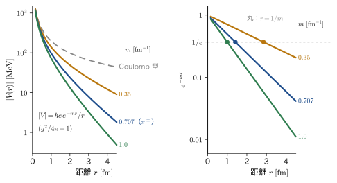
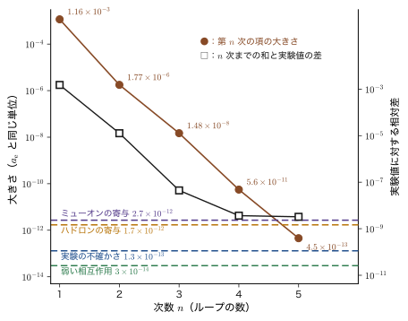
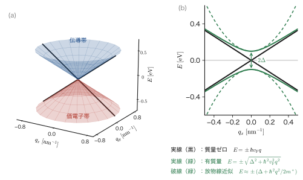
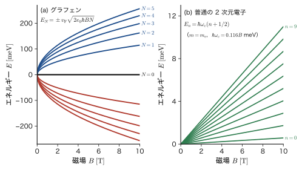

第65章場の量子論と素粒子物理学への道 — 粒子数が変わる世界・QED の入口・固体の Dirac 電子
前の 4 つの章（第61～64章）で，電子の波動方程式を相対論と両立する形に作り変えてきた．Dirac（ディラック）方程式はスピン $\tfrac12$ を最初から含み，その負エネルギー解は陽電子という反粒子として読み直された．では，これで電子の量子力学は完成したのだろうか．そうではない．電子を，換算 Compton 波長（$386\ \mathrm{fm}$）の 4 分の 1（約 $100\ \mathrm{fm}$）よりも狭い領域に閉じ込めようとすると，不確定性原理のせいで運動量のあいまいさが大きくなり，エネルギーのあいまいさが電子 1 対ぶんの質量エネルギー $2m_{\mathrm e}c^2=1.022\ \mathrm{MeV}$ に達して，電子と陽電子の対が真空から現れてしまう．光の粒子 1 個が電子と陽電子に変わり，電子と陽電子が 2 個の光に変わる．「粒子の個数」が変わる世界では，1 個の粒子の波動関数 $\psi(\bm{r},t)$ では記述が追いつかない．
解決の道は，第X部で学んだ第二量子化を，電子そのものにも使うことである．第X部では，光子やフォノンを「電磁場や格子振動の各モードが調和振動子であり，その励起の量子が粒子である」と見た．電子も陽電子も，場（空間の各点に値をもつ量）の各モードを量子化して得られる励起の量子と見なす．これが場の量子論（quantum field theory）である．この章では，この世界の入口に立つ．まず場を量子化して反粒子が自然に現れることを見て（65.1 節），力が粒子のやりとりとして現れること，光子の交換が Coulomb（クーロン）力を，質量のある粒子の交換が湯川型の短距離力を作ることを導く（65.2 節）．次に，量子電磁力学（QED）の Lagrangian（ラグランジアン）と Feynman（ファインマン）図を，摂動展開の項を描いた絵として読み，Compton 散乱，Thomson 散乱，電子の $g-2$，Lamb シフトの数値を求める（65.3 節）．
材料との関わりも深い．Dirac 方程式は真空中の電子だけのものではない．炭素原子が蜂の巣状に並んだグラフェンの電子は，光の速さの約 $1/300$ で走る質量ゼロの Dirac 粒子であり，ギャップの開いた半導体の電子・正孔は質量をもつ Dirac 粒子である．真空の物理で育った道具が，そのまま固体の中で働く様子を 65.4 節で見る．最後に，素粒子物理学（AD 09）へ進むための記号の対応表を示し（65.5 節），本書全体（第I部から第XI部まで）を振り返る（65.6 節）．この章は本書の最後の章である．
- 1 粒子の相対論的量子力学が破綻する 3 つの理由を説明し，その解決が「場の量子化」であることを述べられること
- 複素 Klein–Gordon 場と Dirac 場を生成・消滅演算子で展開し，$\hat{H}$ と電荷 $\hat{Q}$ を導いて，粒子と反粒子が同じ質量・逆の電荷で現れること，対状態 $\hat{b}^\dagger\hat{d}^\dagger\ket{0}$ のエネルギーが $2E_p$ であることを計算できること
- 静的な源の間の力を 2 次摂動論で求め，質量 $m$ の粒子の交換が Yukawa ポテンシャル $V(r)=\dfrac{g^2}{4\pi}\dfrac{e^{-mr}}{r}$ を与えること（$m=0$ で Coulomb ポテンシャル）を，Fourier 変換を行を飛ばさずに導き，到達距離 $1/m$ を $\pi$，$Z$，$W$ について求められること
- Rutherford 散乱と Mott 散乱の断面積を計算し，$200\ \mathrm{kV}$ の電子の Au による散乱の数値を出せること
- QED の Lagrangian，頂点，Feynman 図を摂動展開の項として読み，Compton 散乱の波長のずれ，Thomson 断面積 $\sigma_{\mathrm T}=6.652\times10^{-29}\ \mathrm{m^2}$，電子の $g-2$ の級数，Lamb シフトの大きさの見積りを扱えること
- グラフェンのハニカム格子から $\hat{H}=\hbar v_{\mathrm F}\,\bm{\sigma}\cdot\bm{q}$ を導き，Dirac 円錐・状態密度・Klein トンネル・Landau 準位 $E_N=\pm v_{\mathrm F}\sqrt{2e_0\hbar BN}$・有質量 Dirac 電子を，真空の Dirac 方程式との辞書で理解できること
- 本書の記号と素粒子物理学（AD 09）の記号（自然単位系，Heaviside–Lorentz 単位，相対論的規格化）の対応を使えること．本書の 11 の部が何を積み上げてきたかを述べられること
もとにしたノート：ノートにない内容を補った章である．関連するノート：望月泰英『物理学ノート 量子力学3』 p. 73（第XI部の章扉の見出し）と pp. 61–64（生成・消滅演算子）．
65.1 粒子数が変わる世界 — 場の演算子と反粒子
65.1.1 1 粒子の理論が破綻する 3 つの理由
第61章から第64章で組み立ててきた相対論的量子力学は，1 個の粒子の波動方程式（Klein–Gordon 方程式と Dirac 方程式）だった．波動関数 $\psi(\bm{r},t)$ を決める方程式であり，粒子は 1 個のまま，確率 $\int\abs{\psi}^2\dd^3r=1$ が保存する，という枠組みである．しかし，相対論を真剣に扱うと，この枠組みは次の 3 つの理由で成り立たなくなる．
考察：1 粒子の理論が破綻する 3 つの理由
- 位置を決められる限界．電子を幅 $\Delta x$ の領域に閉じ込めると，運動量の不確定さは $\Delta p\gtrsim\hbar/(2\Delta x)$ になる（第8章 8.6）．エネルギーに直すと $c\,\Delta p\gtrsim\hbar c/(2\Delta x)$ である．$\Delta x$ が換算 Compton 波長 $\bar{\lambda}_{\mathrm C}=\hbar/(m_{\mathrm e}c)=386.16\ \mathrm{fm}$ まで小さくなると，$c\,\Delta p\gtrsim0.26\ \mathrm{MeV}$（$m_{\mathrm e}c^2=0.511\ \mathrm{MeV}$ の約半分）になり，エネルギーのあいまいさが電子 1 個の静止エネルギーに匹敵して，電子 1 個のエネルギーを決められなくなる．さらに $\Delta x\approx\bar{\lambda}_{\mathrm C}/4\approx97\ \mathrm{fm}$ では $c\,\Delta p\gtrsim2m_{\mathrm e}c^2=1.022\ \mathrm{MeV}$ に達し，電子・陽電子の対をつくるのに十分な大きさになる．この大きさの程度より狭い領域では，「電子 1 個がここにいる」という言い方そのものが成り立たない（第64章 64.5 の Zitterbewegung も同じ長さのスケールの現象である）．
- 負エネルギー解．Klein–Gordon 方程式も Dirac 方程式も，$E=\pm\sqrt{p^2c^2+m^2c^4}$ の両方の符号の解をもつ．負エネルギー解を捨てると状態の集まりが完全系にならず，残すと，電子が光子を放出しながらいくらでも低いエネルギーへ落ち続けてしまう．Dirac の海（第64章 64.1）は Pauli の排他原理を使って Fermi 粒子については解決を与えたが，排他原理のない Bose 粒子（スピン 0 の $\pi$ 中間子など）には使えない．
- 粒子数の変化．光子 1 個が原子核の近くで電子と陽電子の対に変わる（$\gamma\to\mathrm{e^-e^+}$，光子のエネルギーが $1.022\ \mathrm{MeV}$ 以上のとき），電子と陽電子が 2 個の光子に変わる（対消滅，$\mathrm{e^-e^+}\to\gamma\gamma$，各 $0.511\ \mathrm{MeV}$．陽電子断層撮影（PET）の原理），中性 $\pi$ 中間子が 2 個の光子に崩壊する（$\pi^0\to\gamma\gamma$）．固体の中でも，光の吸収は電子・正孔対をつくり（第59章 59.4），格子振動の量子（フォノン）は電子に吸収・放出される（第60章 60.5）．電磁相互作用は光子の生成・消滅を伴うので，粒子数が保存しないのは例外ではなく普通である．
1 個の粒子の波動関数は，粒子の個数 $N$ を固定した関数 $\Psi(\bm{x}_1,\dots,\bm{x}_N)$ の形をしており，$N$ が変わる過程をそのままでは書けない（第56章 56.1）．第X部で学んだ解決は，粒子の個数を状態のラベル（占有数）にし，個数を変える演算子 $\hat{a}^\dagger,\hat{a},\hat{c}^\dagger,\hat{c}$ を導入することだった．相対論的な量子力学では，その考え方を，波動関数 $\psi(x),\phi(x)$ そのものを演算子 $\hat{\psi}(x),\hat{\phi}(x)$ に格上げする形で使う．これを場の量子化（field quantization）という．
65.1.2 第X部の復習と，自然単位系への切り替え
使う道具は，第X部のものだけである．まず要点を復習する．
| Bose 粒子（ボソン） | Fermi 粒子（フェルミオン） | |
|---|---|---|
| 演算子 | $\hat{a}_i$（消滅），$\hat{a}_i^\dagger$（生成） | $\hat{c}_i$（消滅），$\hat{c}_i^\dagger$（生成） |
| 基本の関係 | $\comm{\hat{a}_i}{\hat{a}_j^\dagger}=\delta_{ij}$，$\comm{\hat{a}_i}{\hat{a}_j}=0$ | $\acomm{\hat{c}_i}{\hat{c}_j^\dagger}=\delta_{ij}$，$\acomm{\hat{c}_i}{\hat{c}_j}=0$ |
| 占有数 | $\hat{n}_i=\hat{a}_i^\dagger\hat{a}_i$，$n_i=0,1,2,\dots$ | $\hat{n}_i=\hat{c}_i^\dagger\hat{c}_i$，$n_i=0,1$（$(\hat{c}_i^\dagger)^2=0$） |
| 状態 | $\ket{n_1,n_2,\dots}=\prod_i\dfrac{(\hat{a}_i^\dagger)^{n_i}}{\sqrt{n_i!}}\ket{0}$ | $\ket{n_1,n_2,\dots}=(\hat{c}_1^\dagger)^{n_1}(\hat{c}_2^\dagger)^{n_2}\cdots\ket{0}$ |
| 例 | 光子 $\hat{a}_{\bm{k}\lambda}$，フォノン $\hat{b}_{\bm{q}\nu}$（第60章） | 電子 $\hat{c}_{\bm{k}\sigma}$，正孔 $\hat{h}_{\bm{k}\sigma}$（第59章） |
真空 $\ket{0}$ は「どのモードにも粒子がいない状態」を表す（本書では $\ket{0}$ は真空だけを表す）．すべての状態は，$\ket{0}$ に生成演算子を次々に作用させて作られる．光子は電磁場の各モードが調和振動子であることから（第60章 60.2），フォノンは格子の基準モードが調和振動子であることから（60.1，大学基礎物理学 53.7）現れた．励起の量子が粒子である，というこの見方を，電子や $\pi$ 中間子にもそのまま適用するのが，この章の出発点である．
記号：この節から自然単位系 $\hbar=c=1$ に切り替える
式を見やすくするために，この章の 65.1〜65.3 節では自然単位系 $\hbar=c=1$ を使う（大学基礎物理学 58.1，前章までの換算表は 61.6）．質量・エネルギー・運動量は同じ次元（$\mathrm{MeV}$ など），長さと時間は $1/\text{エネルギー}$ の次元になる．たとえば電子の質量は $m_{\mathrm e}=0.511\ \mathrm{MeV}$，換算 Compton 波長は $\bar{\lambda}_{\mathrm C}=1/m_{\mathrm e}$ である．$\mathrm{fm}$ や $\mathrm{s}$ に戻すには $\hbar c=197.327\ \mathrm{MeV\,fm}$ を使う（61.6.2 節の復元の規則）．エネルギー・運動量は $E_p=\sqrt{p^2+m^2}$（$p=\abs{\bm{p}}$），計量は $(+,-,-,-)$ で，4 元ベクトルの内積を $p\cdot x=E_pt-\bm{p}\cdot\bm{x}$ と書く（右辺の $\bm{p}\cdot\bm{x}$ は 3 次元の内積）．平面波は $e^{-ip\cdot x}=e^{-i(E_pt-\bm{p}\cdot\bm{x})}$ で，第X部までの $e^{i(\bm{p}\cdot\bm{x}-Et)/\hbar}$ と同じものである．$\hbar$ と $c$ は，固体の電子を扱う 65.4 節（速さの上限が $c$ ではなく $v_{\mathrm F}$ になる）で復活させる．
箱（体積 $V$，周期境界条件）の中の場を考え，運動量 $\bm{p}=2\pi\bm{n}/L$（$\bm{n}$ は整数の組，$V=L^3$）の平面波でモードを数える（第10章 10.7）．箱規格化なので，モードの和 $\sum_{\bm{p}}$ は $V\to\infty$ で $V\int\dd^3p/(2\pi)^3$ になる．
65.1.3 複素 Klein–Gordon 場の量子化
最も簡単な場，スピン 0 の複素 Klein–Gordon 場 $\phi(x)$ から始める（複素数の値をとる場で，$\pi^+$ と $\pi^-$ のように電荷をもつスピン 0 の粒子に対応する）．場は Klein–Gordon 方程式 $(\partial_t^2-\nabla^2+m^2)\phi=0$（第61章 61.2）を満たす．この方程式の平面波解は，運動量 $\bm{k}$ について 2 種類ある．正の振動数の $e^{-ik\cdot x}=e^{-i\omega_kt+i\bm{k}\cdot\bm{x}}$ と，負の振動数の $e^{+ik\cdot x}$ である（$\omega_k=\sqrt{k^2+m^2}$）．場 $\phi$ を，この両方の平面波の重ね合わせで展開し，展開係数を演算子に格上げする．
定義65.1 複素 Klein–Gordon 場の量子化
場の演算子を次のように展開する．
\begin{equation} \hat{\phi}(x)=\sum_{\bm{k}}\frac{1}{\sqrt{2\omega_kV}}\Bigl(\hat{a}_{\bm{k}}\,e^{-ik\cdot x}+\hat{\bar{a}}_{\bm{k}}^\dagger\,e^{ik\cdot x}\Bigr),\qquad \hat{\phi}^\dagger(x)=\sum_{\bm{k}}\frac{1}{\sqrt{2\omega_kV}}\Bigl(\hat{a}_{\bm{k}}^\dagger\,e^{ik\cdot x}+\hat{\bar{a}}_{\bm{k}}\,e^{-ik\cdot x}\Bigr) \label{eq:65-kg-expand} \end{equation}ここで $\hat{a}_{\bm{k}}$（粒子の消滅）と $\hat{\bar{a}}_{\bm{k}}$（反粒子の消滅．$\bar{a}$ の上線は「反粒子」の印で，Dirac 共役 $\bar{\psi}$ とは別のもの）は互いに独立な Bose 粒子の演算子で，$\comm{\hat{a}_{\bm{k}}}{\hat{a}_{\bm{k}'}^\dagger}=\comm{\hat{\bar{a}}_{\bm{k}}}{\hat{\bar{a}}_{\bm{k}'}^\dagger}=\delta_{\bm{k}\bm{k}'}$，それ以外の組の交換子は $0$ とする．真空は $\hat{a}_{\bm{k}}\ket{0}=\hat{\bar{a}}_{\bm{k}}\ket{0}=0$ で定める．
複素数の場には，$\hat{\phi}$ と $\hat{\phi}^\dagger$ の 2 つがあり，実数の場（$\hat{\phi}=\hat{\phi}^\dagger$，中性の粒子）なら $\hat{\bar{a}}_{\bm{k}}=\hat{a}_{\bm{k}}$ となって演算子は 1 種類になる．実数のスカラー場の量子の例が Higgs 粒子（質量は約 $125\ \mathrm{GeV}/c^2$）で，その自由な運動は第61章の Klein–Gordon 方程式で決まる（素粒子物理学 AD 09 第13章）．複素場では，正の振動数の部分（$e^{-ik\cdot x}$）に掛かる演算子 $\hat{a}$ と，負の振動数の部分（$e^{+ik\cdot x}$）に掛かる演算子 $\hat{\bar{a}}^\dagger$ が別々に現れる．係数 $1/\sqrt{2\omega_kV}$ は，次の囲みで見るように正準交換関係から決まる値で，その結果，1 個の量子のエネルギーが $\omega_k$，電荷が $\pm q$ になる．
準備：Lagrangian 密度から $\mathcal{H}$ と正準交換関係を作る
複素場の Lagrangian 密度は $\mathcal{L}=\partial_\mu\phi^\dagger\partial^\mu\phi-m^2\phi^\dagger\phi=\partial_t\phi^\dagger\,\partial_t\phi-\nabla\phi^\dagger\cdot\nabla\phi-m^2\phi^\dagger\phi$ である（力学の $L=T-U$ を場に拡張したもの．大学基礎物理学 第43章 43.4．Euler–Lagrange 方程式が Klein–Gordon 方程式 $(\partial_t^2-\nabla^2+m^2)\phi=0$ を与える）．正準運動量は $\pi=\partial\mathcal{L}/\partial(\partial_t\phi)=\partial_t\phi^\dagger$，$\pi^\dagger=\partial_t\phi$ で，Legendre 変換（大学基礎物理学 第45章 45.1）でエネルギー密度が
$$ \mathcal{H}=\pi\,\partial_t\phi+\pi^\dagger\partial_t\phi^\dagger-\mathcal{L}=\partial_t\phi^\dagger\,\partial_t\phi+\nabla\phi^\dagger\cdot\nabla\phi+m^2\phi^\dagger\phi $$になる（運動項・勾配項・質量項）．場を量子化するとは，位置と運動量の交換関係 $\comm{\hat{x}}{\hat{p}}=i\hbar$ の場の版として，$\hat{\phi}$ と $\hat{\pi}=\partial_t\hat{\phi}^\dagger$ に $\comm{\hat{\phi}(\bm{x})}{\hat{\pi}(\bm{y})}=i\,\delta^3(\bm{x}-\bm{y})$（自然単位系）を課すことである．式 \eqref{eq:65-kg-expand} の係数は，この関係が $\comm{\hat{a}_{\bm{k}}}{\hat{a}_{\bm{k}}^\dagger}=\comm{\hat{\bar{a}}_{\bm{k}}}{\hat{\bar{a}}_{\bm{k}}^\dagger}=1$ と同じ内容になる値として決まっている．実際，$t=0$ で $\comm{\hat{\phi}(\bm{x})}{\partial_t\hat{\phi}^\dagger(\bm{y})}=\sum_{\bm{k}}\dfrac{i\omega_k}{2\omega_kV}\bigl(e^{i\bm{k}\cdot(\bm{x}-\bm{y})}+e^{-i\bm{k}\cdot(\bm{x}-\bm{y})}\bigr)=\dfrac{i}{V}\sum_{\bm{k}}e^{i\bm{k}\cdot(\bm{x}-\bm{y})}=i\,\delta^3(\bm{x}-\bm{y})$ となる（$\bm{k}\to-\bm{k}$ の対称性と，$\dfrac{1}{V}\sum_{\bm{k}}e^{i\bm{k}\cdot\bm{r}}=\delta^3(\bm{r})$ を使った）．電荷の保存流 $j^\mu=i(\phi^\dagger\partial^\mu\phi-\partial^\mu\phi^\dagger\,\phi)$ は，第61章 61.4 節の連続の式の密度と流れそのものである．
導出：$\hat{H}$ と電荷 $\hat{Q}$ を求める
前の囲みで求めたエネルギー密度（運動項・勾配項・質量項）
$$ \mathcal{H}=\partial_t\phi^\dagger\,\partial_t\phi+\nabla\phi^\dagger\cdot\nabla\phi+m^2\phi^\dagger\phi $$から，全エネルギーは $\hat{H}=\int\mathcal{H}\,\dd^3x$ である．式 \eqref{eq:65-kg-expand} を代入して空間積分を行う．積分 $\int e^{i(\bm{k}-\bm{k}')\cdot\bm{x}}\dd^3x=V\delta_{\bm{k}\bm{k}'}$ のおかげで，運動量が対応するモードどうしの積だけが残る．時間微分の項について， $\partial_t\hat{\phi}=\sum(2\omega V)^{-1/2}(-i\omega)(\hat{a}\,e^{-ik\cdot x}-\hat{\bar{a}}^\dagger e^{ik\cdot x})$， $\partial_t\hat{\phi}^\dagger=\sum(2\omega V)^{-1/2}(i\omega)(\hat{a}^\dagger e^{ik\cdot x}-\hat{\bar{a}}\,e^{-ik\cdot x})$ を使うと，
$$ \int\partial_t\hat{\phi}^\dagger\,\partial_t\hat{\phi}\,\dd^3x=\sum_{\bm{k}}\frac{\omega_k}{2}\Bigl[\hat{a}_{\bm{k}}^\dagger\hat{a}_{\bm{k}}+\hat{\bar{a}}_{\bm{k}}\hat{\bar{a}}_{\bm{k}}^\dagger-\bigl(\hat{a}_{\bm{k}}^\dagger\hat{\bar{a}}_{-\bm{k}}^\dagger e^{2i\omega_kt}+\hat{\bar{a}}_{\bm{k}}\hat{a}_{-\bm{k}}e^{-2i\omega_kt}\bigr)\Bigr] $$となる（$\omega^2/(2\omega)=\omega/2$）．角括弧の最後の項は，時間とともに振動する項である．一方，勾配項と質量項は，$\nabla\to\pm i\bm{k}$ から $\omega^2$ の代わりに $k^2+m^2=\omega_k^2$ が現れて，
$$ \int\bigl(\nabla\hat{\phi}^\dagger\cdot\nabla\hat{\phi}+m^2\hat{\phi}^\dagger\hat{\phi}\bigr)\dd^3x=\sum_{\bm{k}}\frac{\omega_k}{2}\Bigl[\hat{a}_{\bm{k}}^\dagger\hat{a}_{\bm{k}}+\hat{\bar{a}}_{\bm{k}}\hat{\bar{a}}_{\bm{k}}^\dagger+\bigl(\hat{a}_{\bm{k}}^\dagger\hat{\bar{a}}_{-\bm{k}}^\dagger e^{2i\omega_kt}+\hat{\bar{a}}_{\bm{k}}\hat{a}_{-\bm{k}}e^{-2i\omega_kt}\bigr)\Bigr] $$である．振動する項は，時間微分の項と符号が逆で打ち消し合う．これは $\omega_k^2=k^2+m^2$ が成り立つことの現れである．2 つを足すと，
\begin{equation} \hat{H}=\sum_{\bm{k}}\omega_k\bigl(\hat{a}_{\bm{k}}^\dagger\hat{a}_{\bm{k}}+\hat{\bar{a}}_{\bm{k}}\hat{\bar{a}}_{\bm{k}}^\dagger\bigr)=\sum_{\bm{k}}\omega_k\bigl(\hat{a}_{\bm{k}}^\dagger\hat{a}_{\bm{k}}+\hat{\bar{a}}_{\bm{k}}^\dagger\hat{\bar{a}}_{\bm{k}}\bigr)+\sum_{\bm{k}}\omega_k \label{eq:65-kg-H} \end{equation}を得る（2 つ目の等号で $\hat{\bar{a}}\hat{\bar{a}}^\dagger=\hat{\bar{a}}^\dagger\hat{\bar{a}}+1$ を使った）．最後の和 $\sum_{\bm{k}}\omega_k$ は，各モードのゼロ点エネルギー $\tfrac12\omega_k$ を 2 種類（$\hat{a}$ と $\hat{\bar{a}}$）について足したものである（第56章 56.2，60.2）．エネルギーの基準点の問題なので，以下では捨てる（定義65.2）．
電荷は，位相変換 $\phi\to e^{-iq\theta}\phi$ に対応する保存流 $j^\mu=i(\phi^\dagger\partial^\mu\phi-\partial^\mu\phi^\dagger\,\phi)$ の時間成分から，$\hat{Q}=q\int\hat{j}^{\,0}\dd^3x$，$\hat{j}^{\,0}=i(\hat{\phi}^\dagger\partial_t\hat{\phi}-\partial_t\hat{\phi}^\dagger\,\hat{\phi})$ で与えられる（第61章 61.4 の密度と同じ形．$q$ は 1 個の粒子の電荷）．同じ計算で，時間に依存しない項は $-2i\omega\,(\hat{a}^\dagger\hat{a}-\hat{\bar{a}}\hat{\bar{a}}^\dagger)/(2\omega V)$ の形になり，振動する項は打ち消し合う．空間積分と $i$ を掛けて
\begin{equation} \hat{Q}=q\sum_{\bm{k}}\bigl(\hat{a}_{\bm{k}}^\dagger\hat{a}_{\bm{k}}-\hat{\bar{a}}_{\bm{k}}\hat{\bar{a}}_{\bm{k}}^\dagger\bigr)=q\sum_{\bm{k}}\bigl(\hat{a}_{\bm{k}}^\dagger\hat{a}_{\bm{k}}-\hat{\bar{a}}_{\bm{k}}^\dagger\hat{\bar{a}}_{\bm{k}}\bigr)-q\sum_{\bm{k}}1 \label{eq:65-kg-Q} \end{equation}となる．
（導出終わり）
定義65.2 正規積
演算子の積で，生成演算子をすべて消滅演算子の左に並べ替えたものを正規積（normal ordering）といい，$\,{:}\cdots{:}\,$ で表す．Fermi 粒子の演算子を並べ替えるときは，入れ替えるたびに符号 $-1$ を掛ける．正規積は真空の期待値が 0 で，上の無限大の定数（真空のエネルギーと電荷）を落とした形を与える．以下，$\hat{H}$，$\hat{Q}$ はこの意味の正規積で書く．
定理65.1 複素 Klein–Gordon 場の $\hat{H}$ と $\hat{Q}$
\begin{equation} \hat{H}=\sum_{\bm{k}}\omega_k\bigl(\hat{a}_{\bm{k}}^\dagger\hat{a}_{\bm{k}}+\hat{\bar{a}}_{\bm{k}}^\dagger\hat{\bar{a}}_{\bm{k}}\bigr),\qquad \hat{Q}=q\sum_{\bm{k}}\bigl(\hat{a}_{\bm{k}}^\dagger\hat{a}_{\bm{k}}-\hat{\bar{a}}_{\bm{k}}^\dagger\hat{\bar{a}}_{\bm{k}}\bigr)=q\,(\hat{N}_a-\hat{N}_{\bar{a}}) \label{eq:65-kg-HQ} \end{equation}すなわち，$\hat{a}_{\bm{k}}^\dagger\ket{0}$ は運動量 $\bm{k}$，エネルギー $\omega_k$，電荷 $+q$ の粒子，$\hat{\bar{a}}_{\bm{k}}^\dagger\ket{0}$ は運動量 $\bm{k}$，エネルギー $\omega_k$，電荷 $-q$ の粒子である．同じ質量で逆の電荷をもつ 2 種類の粒子，すなわち粒子と反粒子が 1 つの場から現れる（$\pi^+$ と $\pi^-$ がその例）．
この結果を，Klein–Gordon 方程式の困難（第61章 61.4）の言葉で読み直そう．1 粒子の波動方程式では，負エネルギー解 $e^{+ik\cdot x}$ は「エネルギー $-\omega_k$ の粒子」で，その $\rho=(E/m)\abs{N}^2$ は負になっていた．場の理論では，$e^{+ik\cdot x}$ に掛かる演算子は生成演算子 $\hat{\bar{a}}^\dagger$ であり，それが作るのはエネルギー $+\omega_k$ の反粒子である．「負エネルギーの粒子の負の確率」は，「正エネルギーの反粒子の負の電荷」と読み替えられる（Pauli と Weisskopf，1934）．負エネルギー解が出たことは，理論の破綻ではなく，反粒子の存在の予告だったのである．また，Bose 粒子の交換関係 $\hat{\bar{a}}\hat{\bar{a}}^\dagger=\hat{\bar{a}}^\dagger\hat{\bar{a}}+1$ を使ったので，式 \eqref{eq:65-kg-HQ} の $\hat{H}$ は，どの状態でも 0 以上で，真空が最低エネルギーの状態になる（Fermi 粒子に交換関係を課した場合との比較は演習65.8）．
例題65.1 複素 Klein–Gordon 場の 1 粒子状態の電荷
(1) 1 粒子状態 $\ket{\mathrm{a}}=\hat{a}_{\bm{k}}^\dagger\ket{0}$ と $\ket{\bar{\mathrm{a}}}=\hat{\bar{a}}_{\bm{k}}^\dagger\ket{0}$ の $\hat{H}$ と $\hat{Q}$ の値を求めよ．(2) 1 粒子の波動関数 $\phi_{\pm}=N_{\pm}e^{\mp i\omega t+i\bm{k}\cdot\bm{x}}$（上の符号が正エネルギー，下が負エネルギー）に対する密度 $j^0=i(\phi^*\partial_t\phi-\partial_t\phi^*\,\phi)$ を $V$ 全体で積分すると，$\abs{N_\pm}^2=1/(2\omega V)$ のとき $\pm1$ となることを示し，(1) の電荷との関係を述べよ．
解答 (1) 定理65.1 の式で，$\hat{N}_a=\sum_{\bm{k}}\hat{a}_{\bm{k}}^\dagger\hat{a}_{\bm{k}}$ は $\hat{a}$ 粒子の総数である．$\hat{a}_{\bm{k}}^\dagger\hat{a}_{\bm{k}}\hat{a}_{\bm{k}}^\dagger\ket{0}=\hat{a}_{\bm{k}}^\dagger(\hat{a}_{\bm{k}}^\dagger\hat{a}_{\bm{k}}+1)\ket{0}=\hat{a}_{\bm{k}}^\dagger\ket{0}$（$\hat{a}\ket{0}=0$ を使った）なので，$\hat{N}_a\ket{\mathrm{a}}=\ket{\mathrm{a}}$，$\hat{N}_{\bar{a}}\ket{\mathrm{a}}=0$．したがって $\hat{H}\ket{\mathrm{a}}=\omega_k\ket{\mathrm{a}}$，$\hat{Q}\ket{\mathrm{a}}=+q\ket{\mathrm{a}}$．同様に $\hat{H}\ket{\bar{\mathrm{a}}}=\omega_k\ket{\bar{\mathrm{a}}}$，$\hat{Q}\ket{\bar{\mathrm{a}}}=-q\ket{\bar{\mathrm{a}}}$．
(2) $\phi_\pm$ の時間微分は $\partial_t\phi_\pm=\mp i\omega\phi_\pm$．よって $j^0=i\bigl(\phi^*(\mp i\omega\phi)-(\pm i\omega\phi^*)\phi\bigr)=i(\mp2i\omega)\abs{\phi}^2=\pm2\omega\abs{N_\pm}^2$．空間で積分すると $\int j^0\dd^3x=\pm2\omega\abs{N_\pm}^2V=\pm1$（$\abs{N_\pm}^2=1/2\omega V$）．正エネルギー解は $+1$，負エネルギー解は $-1$ で，第61章の「負の確率」の符号と同じである．場の理論では，後者は $\hat{\bar{a}}^\dagger\ket{0}$ の電荷 $-q$ に当たる．
65.1.4 Dirac 場の量子化
Dirac 方程式についても，同じことを行う．第62章 62.5 節で，運動量 $\bm{p}$ の平面波解 $u(\bm{p},s)\,e^{-ip\cdot x}$（エネルギー $+E_p$，スピン $s=\uparrow,\downarrow$，$u^\dagger u=1$）と，負エネルギーの解 $w(\bm{p},s)\,e^{i(\bm{p}\cdot\bm{x}+E_pt)}$（時間依存が $e^{+iE_pt}$）を求めた．負エネルギーの解を，スピンと運動量を反転した反粒子の解（第64章 64.2 節の電荷共役）に書き直したものを，次のように定める．
\begin{equation} v(\bm{p},s)\equiv i\gamma^2u^*(\bm{p},s)\qquad\bigl(\gamma^2=\beta\alpha_y=\begin{pmatrix}0&\sigma_y\\-\sigma_y&0\end{pmatrix}\bigr) \label{eq:65-v-def} \end{equation}成分で計算すると，$v(\bm{p},\uparrow)=w(-\bm{p},\downarrow)$，$v(\bm{p},\downarrow)=-w(-\bm{p},\uparrow)$ となる（例題65.2）．すなわち $v(\bm{p},s)e^{+ip\cdot x}$ は，運動量 $-\bm{p}$，スピン $-s$ の負エネルギー電子の波動関数であり，「空孔（穴）」の量子数は，エネルギー・運動量・スピン・電荷すべてを反転したもの，$(E,\bm{p},s,q)\to(-E,-\bm{p},-s,-q)$ である（第64章 64.1 節）．$v^\dagger v=1$ である．
定義65.3 Dirac 場の量子化
\begin{equation} \hat{\psi}(x)=\sum_{\bm{p},s}\frac{1}{\sqrt{V}}\Bigl[\hat{b}_{\bm{p}s}\,u(\bm{p},s)\,e^{-ip\cdot x}+\hat{d}_{\bm{p}s}^\dagger\,v(\bm{p},s)\,e^{ip\cdot x}\Bigr] \label{eq:65-dirac-expand} \end{equation}ここで $\hat{b}_{\bm{p}s}$（電子の消滅），$\hat{d}_{\bm{p}s}$（陽電子の消滅）は Fermi 粒子の演算子で，反交換関係
\begin{equation} \acomm{\hat{b}_{\bm{p}s}}{\hat{b}_{\bm{p}'s'}^\dagger}=\acomm{\hat{d}_{\bm{p}s}}{\hat{d}_{\bm{p}'s'}^\dagger}=\delta_{\bm{p}\bm{p}'}\delta_{ss'},\qquad\text{他のすべての組の反交換子}=0 \label{eq:65-dirac-ac} \end{equation}を満たす．真空は $\hat{b}_{\bm{p}s}\ket{0}=\hat{d}_{\bm{p}s}\ket{0}=0$ で定める．
注意：演算子の文字の使い分け
Klein–Gordon 場の粒子と反粒子の演算子は $\hat{a},\hat{\bar{a}}$（ボソン．交換関係），Dirac 場の電子と陽電子の演算子は $\hat{b},\hat{d}$（フェルミオン．反交換関係）と，文字を分けて書いた（場の量子論の教科書では，Klein–Gordon 場の反粒子にも $b$ を使う慣習が多いので，他書を読むときは注意する）．第60章のフォノンの演算子 $\hat{b}_{\bm{q}\nu}$，第59章の正孔の演算子 $\hat{h}_{\bm{k}\sigma}$（Planck 定数と別）とも別のものである．
導出：Dirac 場の $\hat{H}$，$\hat{Q}$，$\hat{\bm{P}}$
全エネルギーは，1 粒子の Diracハミルトニアン $\hat{h}_{\mathrm D}=\bm{\alpha}\cdot\hat{\bm{p}}+\beta m$（自然単位系）を場の $\hat{\psi}$ で挟んだもの，$\hat{H}=\int\hat{\psi}^\dagger\hat{h}_{\mathrm D}\hat{\psi}\,\dd^3x$ である（第58章の 1 体演算子 $\sum\mel{i}{t}{j}\hat{c}_i^\dagger\hat{c}_j$ の連続版）．式 \eqref{eq:65-dirac-expand} に $\hat{h}_{\mathrm D}$ を作用させる．
- $u(\bm{p},s)e^{-ip\cdot x}$ の空間部分は $e^{i\bm{p}\cdot\bm{x}}$ なので $\hat{h}_{\mathrm D}\to H(\bm{p})=\bm{\alpha}\cdot\bm{p}+\beta m$．$u$ は固有値 $+E_p$ の固有ベクトルである：$H(\bm{p})u=E_pu$．
- $v(\bm{p},s)e^{+ip\cdot x}$ の空間部分は $e^{-i\bm{p}\cdot\bm{x}}$ なので $\hat{h}_{\mathrm D}\to H(-\bm{p})$．$v(\bm{p},s)$ は $w(-\bm{p},\mp s)$ に比例する（式 \eqref{eq:65-v-def} の直後）ので，固有値 $-E_p$ の固有ベクトルである：$H(-\bm{p})v=-E_pv$．
したがって $\hat{h}_{\mathrm D}\hat{\psi}=\sum V^{-1/2}E_p\bigl[\hat{b}\,u\,e^{-ip\cdot x}-\hat{d}^\dagger v\,e^{ip\cdot x}\bigr]$．これに左から $\hat{\psi}^\dagger=\sum V^{-1/2}\bigl[\hat{b}^\dagger u^\dagger e^{ip\cdot x}+\hat{d}\,v^\dagger e^{-ip\cdot x}\bigr]$ を掛けて空間積分すると，$\int e^{i(\bm{p}-\bm{p}')\cdot\bm{x}}\dd^3x=V\delta_{\bm{p}\bm{p}'}$ と，同じ $\bm{p}$ の $u$ と $v(-\bm{p},\cdot)$ の直交性（固有値の異なるエルミート行列の固有ベクトル）$u^\dagger(\bm{p},s)v(-\bm{p},s')=0$，および $u^\dagger u=v^\dagger v=1$ から，
$$ \hat{H}=\sum_{\bm{p},s}E_p\bigl(\hat{b}_{\bm{p}s}^\dagger\hat{b}_{\bm{p}s}-\hat{d}_{\bm{p}s}\hat{d}_{\bm{p}s}^\dagger\bigr) $$となる．ここで反交換関係 $\hat{d}\hat{d}^\dagger=1-\hat{d}^\dagger\hat{d}$ を使うと，
\begin{equation} \hat{H}=\sum_{\bm{p},s}E_p\bigl(\hat{b}_{\bm{p}s}^\dagger\hat{b}_{\bm{p}s}+\hat{d}_{\bm{p}s}^\dagger\hat{d}_{\bm{p}s}\bigr)-\sum_{\bm{p},s}E_p \label{eq:65-dirac-H} \end{equation}である．$\hat{d}$ の項の符号が，$-\hat{d}\hat{d}^\dagger$ から $+\hat{d}^\dagger\hat{d}$ に変わったことに注目してほしい．負エネルギー解に掛かっていた演算子を生成演算子 $\hat{d}^\dagger$ にし，さらに反交換関係を使うと，反粒子のエネルギーが正になるのである．最後の和 $-\sum E_p$ は，Dirac の海の全エネルギー（負の無限大）に当たる定数で，正規積（定義65.2）で落とす．
電荷と運動量も同様である．$\hat{Q}=q\int\hat{\psi}^\dagger\hat{\psi}\,\dd^3x=q\sum(\hat{b}^\dagger\hat{b}+\hat{d}\hat{d}^\dagger)=q\sum(\hat{b}^\dagger\hat{b}-\hat{d}^\dagger\hat{d})+q\sum1$．運動量 $\hat{\bm{P}}=\int\hat{\psi}^\dagger(-i\nabla)\hat{\psi}\,\dd^3x$ では，$u\,e^{-ip\cdot x}$ の空間部分 $e^{i\bm{p}\cdot\bm{x}}$ が運動量 $+\bm{p}$ を，$v\,e^{+ip\cdot x}$ の空間部分 $e^{-i\bm{p}\cdot\bm{x}}$ が運動量 $-\bm{p}$ を与えるので，$\hat{\bm{P}}=\sum\bm{p}\,(\hat{b}^\dagger\hat{b}-\hat{d}\hat{d}^\dagger)$ となる．同じく $\hat{d}\hat{d}^\dagger=1-\hat{d}^\dagger\hat{d}$ を使うと $\sum\bm{p}\,(\hat{b}^\dagger\hat{b}+\hat{d}^\dagger\hat{d})-\sum\bm{p}$ で，最後の和は $\bm{p}$ と $-\bm{p}$ が打ち消し合って $0$ である．
（導出終わり）
定理65.2 Dirac 場の $\hat{H}$，$\hat{Q}$，$\hat{\bm{P}}$
\begin{equation} \hat{H}=\sum_{\bm{p},s}E_p\bigl(\hat{b}_{\bm{p}s}^\dagger\hat{b}_{\bm{p}s}+\hat{d}_{\bm{p}s}^\dagger\hat{d}_{\bm{p}s}\bigr),\quad \hat{Q}=q\sum_{\bm{p},s}\bigl(\hat{b}_{\bm{p}s}^\dagger\hat{b}_{\bm{p}s}-\hat{d}_{\bm{p}s}^\dagger\hat{d}_{\bm{p}s}\bigr),\quad \hat{\bm{P}}=\sum_{\bm{p},s}\bm{p}\bigl(\hat{b}_{\bm{p}s}^\dagger\hat{b}_{\bm{p}s}+\hat{d}_{\bm{p}s}^\dagger\hat{d}_{\bm{p}s}\bigr) \label{eq:65-dirac-HQ} \end{equation}$\hat{b}_{\bm{p}s}^\dagger\ket{0}$ は，運動量 $\bm{p}$，スピン $s$，エネルギー $E_p$，電荷 $q$ の電子．$\hat{d}_{\bm{p}s}^\dagger\ket{0}$ は，運動量 $\bm{p}$，スピン $s$，エネルギー $E_p$，電荷 $-q$ の陽電子（電子の反粒子）である．電子の電荷は SI で $q=-e_0$（自然単位系の Heaviside–Lorentz 単位では $q=-e_{\mathrm{HL}}$．65.3.1 節），陽電子は $+e_0$ である．
考察：なぜ電子は Fermi 粒子でなければならないのか
導出の中で，反交換関係 $\acomm{\hat{d}}{\hat{d}^\dagger}=1$ を使って $-\hat{d}\hat{d}^\dagger$ を $+\hat{d}^\dagger\hat{d}-1$ に直した．もし $\hat{d}$ が Bose 粒子（交換関係 $\comm{\hat{d}}{\hat{d}^\dagger}=1$）なら，$\hat{d}\hat{d}^\dagger=\hat{d}^\dagger\hat{d}+1$ なので $\hat{H}=\sum E_p(\hat{b}^\dagger\hat{b}-\hat{d}^\dagger\hat{d})-\cdots$ となり，陽電子を増やすほどエネルギーがいくらでも下がってしまう．理論はエネルギーの下限をもたず，意味をなさない．逆に Klein–Gordon 場に反交換関係を課すと，式 \eqref{eq:65-kg-H} の $\hat{\bar{a}}\hat{\bar{a}}^\dagger=1-\hat{\bar{a}}^\dagger\hat{\bar{a}}$ から同じ破綻が起こる．こうして，スピン 0 の場は Bose 統計，スピン $\tfrac12$ の場は Fermi 統計でなければならないことが，エネルギーの下限という単純な要請から見える（一般の場合がスピンと統計の関係で，Pauli が 1940 年に示した．証明は場の量子論の教科書に任せ，ここでは発見的な理由にとどめる）．
例題65.2 $v(\bm{p},s)$ と空孔の量子数 — 場の演算子 $\hat{d}^\dagger$ との対応
第64章 64.2.3 節で，$v(\bm{p},s)=i\gamma^2u^*(\bm{p},s)$ が第62章の負エネルギー解 $w$ と $v(\bm{p},\uparrow)=w(-\bm{p},\downarrow)$，$v(\bm{p},\downarrow)=-w(-\bm{p},\uparrow)$ で結ばれることを学んだ（例題64.4 と演習64.3 に $p=mc$ の数値がある）．(1) 電子が $z$ 方向に運動量 $p=m$（自然単位系）をもつときの $v(\bm{p},\uparrow)$ を，$i\gamma^2(x_1,x_2,x_3,x_4)^{\mathsf T}=(x_4,\,-x_3,\,-x_2,\,x_1)^{\mathsf T}$ を使って書き下せ．(2) 静止系 $\bm{p}=0$ の $v(\bm{0},\uparrow)$ が表す状態と，場の演算子 $\hat{d}^\dagger_{\bm{0}\uparrow}\ket{0}$ が表す陽電子の量子数の関係を述べよ．
解答 (1) 第62章 例題62.9 の $E_p=\sqrt2\,m$ で $u(\bm{p},\uparrow)=(0.9239,\,0,\,0.3827,\,0)^{\mathsf T}$ は実ベクトルなので $u^*=u$，$v(\bm{p},\uparrow)=(0,\,-0.3827,\,0,\,0.9239)^{\mathsf T}$ である．これは $w(-\bm{p},\downarrow)=0.9239\,(0,\,-0.4142,\,0,\,1)^{\mathsf T}$ に等しい．
(2) 静止系では $u(\bm{0},\uparrow)=(1,0,0,0)^{\mathsf T}$ から $v(\bm{0},\uparrow)=(0,0,0,1)^{\mathsf T}$．これは第62章の静止系の解 $u^{(4)}$，すなわちスピン下向き・エネルギー $-mc^2$ の解である．スピン下向きの負エネルギー電子が 1 個欠けた状態（穴）が，スピン上向きの陽電子 $\hat{d}_{\bm{0}\uparrow}^\dagger\ket{0}$ に対応する，という量子数の反転（$s\to-s$）がここで確かめられた．
65.1.5 空孔理論との対応と，粒子数が変わる過程
場の量子化の結果は，第64章で学んだ空孔理論（Dirac の海）と，次のように対応する．真空 $\ket{0}$（$\hat{b}\ket{0}=\hat{d}\ket{0}=0$）は，負エネルギーの状態がすべて電子で満たされた Dirac の海である．$\hat{d}_{\bm{p}s}^\dagger$ は，負エネルギーの電子 $w(-\bm{p},-s)$ を 1 個取り除く演算子（穴をつくる）に当たり，その結果は「エネルギー $+E_p$，運動量 $\bm{p}$，スピン $s$，電荷 $-q$ の粒子」として振る舞う．電子を負エネルギー状態から正エネルギー状態に励起する過程は，$\hat{b}^\dagger\hat{d}^\dagger$ を真空に作用させて電子と陽電子の対をつくることに当たる．
この構造は，半導体の電子・正孔対と同じである（第57章 57.7，第59章 59.2）．正孔の演算子 $\hat{h}_{\bm{k}\sigma}^\dagger=\hat{c}_{-\bm{k},-\sigma}$ は，価電子帯の電子を 1 個取り除き，運動量・スピン・電荷が反転した粒子をつくる．Dirac の真空は「完全に詰まった価電子帯と空の伝導帯」に，電子・陽電子対を作るために必要な $2mc^2=1.022\ \mathrm{MeV}$ はバンドギャップ $E_{\mathrm g}$ に当たる．Si のギャップ $1.12\ \mathrm{eV}$ と比べると $9.1\times10^{5}$ 倍である．この対応は 65.4 節で，グラフェンの電子を通して再び現れる．
ここまでの結果は，粒子の数が保存しないことを意味する．定理65.2 の $\hat{H}$ と $\hat{Q}$ は，電子数 $\hat{N}_b=\sum\hat{b}^\dagger\hat{b}$ と陽電子数 $\hat{N}_d=\sum\hat{d}^\dagger\hat{d}$ を使って，$\hat{H}=\sum E_p(\hat{n}_b+\hat{n}_d)$，$\hat{Q}=q(\hat{N}_b-\hat{N}_d)$ と書ける．自由な場では，$\hat{N}_b$ と $\hat{N}_d$ はそれぞれ保存する．しかし，次の 65.2 節で見る相互作用（光子との結合）は，$\hat{b}^\dagger\hat{d}^\dagger\hat{a}$（光子 1 個が電子・陽電子対に変わる），$\hat{d}\hat{b}\hat{a}^\dagger$（対消滅）などの項を含み，$\hat{N}_b+\hat{N}_d$ を変える．変えないのは $\hat{N}_b-\hat{N}_d$（すなわち電荷 $\hat{Q}$）である．粒子数は変わるが，電荷は保存する．
例題65.3 電子・陽電子の対状態
状態 $\ket{\mathrm{pair}}=\hat{b}_{\bm{p}\uparrow}^\dagger\hat{d}_{-\bm{p}\downarrow}^\dagger\ket{0}$（運動量 $\bm{p}$，スピン上向きの電子と，運動量 $-\bm{p}$，スピン下向きの陽電子）のエネルギー $E$，全運動量 $\bm{P}$，電荷 $Q$ を求めよ．$p=m_{\mathrm e}c$（自然単位系で $p=m_{\mathrm e}$）のとき $E$ は何 $\mathrm{MeV}$ か．対をつくるしきい値 $2m_{\mathrm e}c^2$ との差は何を表すか．
解答 定理65.2 の式で，$\hat{n}_b=\hat{b}_{\bm{p}\uparrow}^\dagger\hat{b}_{\bm{p}\uparrow}$ の値は $1$，$\hat{n}_d=\hat{d}_{-\bm{p}\downarrow}^\dagger\hat{d}_{-\bm{p}\downarrow}$ も $1$，他のモードは空である（例題65.1 と同様に，$\hat{b}^\dagger\hat{b}\,\hat{b}^\dagger\ket{0}=\hat{b}^\dagger\ket{0}$，反交換関係から）．したがって
$$ E=E_p+E_{-p}=2E_p,\qquad\bm{P}=\bm{p}+(-\bm{p})=0,\qquad Q=q(1-1)=0. $$$p=m_{\mathrm e}$ のとき $E_p=\sqrt{p^2+m^2}=\sqrt2\,m_{\mathrm e}$ なので，$E=2\sqrt2\,m_{\mathrm e}c^2=2\times1.41421\times0.510999\ \mathrm{MeV}=1.4453\ \mathrm{MeV}$．しきい値 $2m_{\mathrm e}c^2=1.0220\ \mathrm{MeV}$ との差 $0.4233\ \mathrm{MeV}$ は，電子と陽電子が運動量 $\pm m_{\mathrm e}c$ で持つ運動エネルギーの和 $2(E_p-m_{\mathrm e}c^2)=2(\sqrt2-1)\,m_{\mathrm e}c^2$ である．
全運動量 $0$，電荷 $0$ の状態は，光子 2 個に変わることができる．運動量保存から光子は互いに逆向きに進み，エネルギー保存から各光子のエネルギーは $E_p$ である．この例では，各 $E_p=\sqrt2\,m_{\mathrm e}c^2=0.7227\ \mathrm{MeV}$ の光子 2 個に移る（$p$ がほかの値の場合は演習65.1）．なお，$\bm{P}=0$ の対の質量は $2E_p\ge2m_{\mathrm e}\gt0$ なので，光子 1 個（質量 0）がこの対に変わることはできない．実際の対生成では，原子核などが反跳の運動量を受け持つ．
65.2 力は粒子の交換 — 光子交換・Coulomb・Yukawa・Rutherford 散乱
65.2.1 相互作用は場と場の積 — 頂点
電子と電磁場の相互作用は，最小結合 $\hat{\bm{p}}\to\hat{\bm{p}}-q\bm{A}$（第63章）で入る．場の言葉で書くと，電子の場 $\hat{\psi}$ と光子の場 $\hat{A}_\mu$ の積になる：
\begin{equation} \hat{H}_{\mathrm{int}}=q\int\bigl(\hat{\psi}^\dagger\hat{\psi}\,\hat{A}_0-\hat{\psi}^\dagger\bm{\alpha}\hat{\psi}\cdot\hat{\bm{A}}\bigr)\dd^3x=q\int\hat{\bar{\psi}}\gamma^\mu\hat{\psi}\,\hat{A}_\mu\,\dd^3x \label{eq:65-Hint} \end{equation}である（$\bar{\psi}=\psi^\dagger\gamma^0$，$A^\mu=(A_0,\bm{A})$，$\gamma^\mu$ は第62章の Dirac 行列．右辺の形は第X部で見た $\sum\mel{i}{t}{j}\hat{c}_i^\dagger\hat{c}_j$ の連続版であり，前半は「電荷密度 × スカラーポテンシャル $-$ 電流密度 $\cdot$ ベクトルポテンシャル」という古典電磁気学のエネルギーの形である）．光子の場 $\hat{A}_\mu$ は，第60章 60.2 の展開 $\hat{A}_\mu=\sum_{\bm{k}\lambda}(2\omega_kV)^{-1/2}\bigl(\hat{a}_{\bm{k}\lambda}\epsilon_\mu e^{-ik\cdot x}+\text{h.c.}\bigr)$（$\epsilon_\mu$ は偏光ベクトル，h.c. はエルミート共役）である．
式 \eqref{eq:65-Hint} に $\hat{\psi}$ の展開（式 \eqref{eq:65-dirac-expand}）と光子の展開を代入すると，各項は「電子の場の 2 個の演算子と，光子の演算子 1 個」の積になる．たとえば
- $\hat{b}_{\bm{p}'s'}^\dagger\hat{b}_{\bm{p}s}\hat{a}_{\bm{k}\lambda}$：電子が光子を 1 個吸収して運動量を変える，
- $\hat{b}_{\bm{p}'s'}^\dagger\hat{b}_{\bm{p}s}\hat{a}_{\bm{k}\lambda}^\dagger$：電子が光子を 1 個放出する，
- $\hat{b}^\dagger\hat{d}^\dagger\hat{a}$：光子 1 個が電子・陽電子の対に変わる，$\hat{d}\hat{b}\hat{a}^\dagger$：対が消えて光子が 1 個できる，
などがある．これらをまとめて描いたものが，頂点（vertex）である（次節の図65.3(a)）．1 種類の頂点が，電子の放出・吸収，対生成・対消滅のすべてを表す．そこが場の理論のすばらしさである．
注意：1 個の頂点で起こる過程は，自由空間では実現しない
孤立した電子が光子を 1 個放出する過程 $\mathrm{e}^-(p)\to\mathrm{e}^-(p')+\gamma(k)$ は，エネルギーと運動量を同時に保存できない．$p=p'+k$ の両辺を 2 乗して $m^2=m^2+2p'\cdot k$（光子は $k^2=0$），すなわち $p'\cdot k=E'\omega-\bm{p}'\cdot\bm{k}=0$ となるが，質量のある電子では $E'\gt\abs{\bm{p}'}$ なので，$\omega\gt0$ のとき左辺は正になる．同じ理由で，光子 1 個は真空中で電子・陽電子対に変わらない（例題65.3）．実現する過程は，頂点を 2 個以上つないだ形になる．たとえば，2 個の電子の間で光子を 1 個やりとりする過程では，光子は途中で生まれ途中で消えるだけで，観測されない仮想光子（virtual photon）である．
65.2.2 光子の交換が Coulomb 力を作る — Yukawa ポテンシャル
記号の断り：この章では $q$ が 65.1〜65.3 節で粒子の電荷，65.4 節でグラフェンの波数（K 点からの波数ベクトル）を表し，$g$ が結合定数（65.2 節），電子の $g$ 因子（65.3.4 節），状態密度 $g(E)$（65.4 節），計量 $g_{\mu\nu}$（65.3 節）を表す．文脈で区別してほしい．運動量移行（Fourier 変数）には $\bm{k}$ または $\bm{Q}$ を使う（$\bm{Q}$ は電荷 $\hat{Q}$ とは別の量）．
仮想光子のやりとりが，どのようにして Coulomb の力になるのかを，第V部の 2 次摂動論（第27章 27.5）で導こう．以下では簡単のため，質量 $m$ のスピン 0 の実数の場 $\hat{\phi}$ が，空間の 2 点 $\bm{x}_1$，$\bm{x}_2$ に固定された 2 つの点状の源と，結合定数 $g$ で結合している模型を考える：
$$ \hat{H}=\hat{H}_0+\hat{H}',\qquad\hat{H}_0=\sum_{\bm{k}}\omega_k\hat{a}_{\bm{k}}^\dagger\hat{a}_{\bm{k}},\qquad\hat{H}'=g\bigl[\hat{\phi}(\bm{x}_1)+\hat{\phi}(\bm{x}_2)\bigr],\qquad\hat{\phi}(\bm{x})=\sum_{\bm{k}}\frac{1}{\sqrt{2\omega_kV}}\bigl(\hat{a}_{\bm{k}}e^{i\bm{k}\cdot\bm{x}}+\hat{a}_{\bm{k}}^\dagger e^{-i\bm{k}\cdot\bm{x}}\bigr) $$（$\hat{H}_0$ のゼロ点エネルギーは落とした．$\omega_k=\sqrt{k^2+m^2}$）．源は場の量子を作ったり吸収したりするだけで，動かない．光子の場合の $\hat{A}_0$ に当たるものを，質量 $m$ の一般の場に置き換えたものと思えばよい．
導出：2 つの源の間のエネルギー
真空 $\ket{0}$ のエネルギーを 2 次摂動論で求める．1 次の補正 $\mel{0}{\hat{H}'}{0}$ は，$\hat{a}$ か $\hat{a}^\dagger$ を 1 個しか含まないので $0$ である．2 次の補正は
$$ E^{(2)}=-\sum_{n\ne0}\frac{\abs{\mel{n}{\hat{H}'}{0}}^2}{E_n-E_0}. $$$\hat{H}'$ は $\ket{0}$ から場の量子 1 個の状態 $\ket{1_{\bm{k}}}=\hat{a}_{\bm{k}}^\dagger\ket{0}$ にしか移せず，そのエネルギー差は $E_n-E_0=\omega_k$ である．行列要素は
$$ \mel{1_{\bm{k}}}{\hat{H}'}{0}=\frac{g}{\sqrt{2\omega_kV}}\bigl(e^{-i\bm{k}\cdot\bm{x}_1}+e^{-i\bm{k}\cdot\bm{x}_2}\bigr),\qquad \abs{\mel{1_{\bm{k}}}{\hat{H}'}{0}}^2=\frac{g^2}{2\omega_kV}\Bigl(2+e^{i\bm{k}\cdot\bm{r}}+e^{-i\bm{k}\cdot\bm{r}}\Bigr) $$（$\bm{r}=\bm{x}_1-\bm{x}_2$）．これを $E^{(2)}$ に入れると，
$$ E^{(2)}=-g^2\sum_{\bm{k}}\frac{1}{2\omega_k^2V}\bigl(2+2\cos\bm{k}\cdot\bm{r}\bigr) $$である．定数の 2 は，各々の源が自分で作った場に自分が引かれる自己エネルギーで，2 つの源の距離に依存しない（源の質量に繰り込まれる）．距離に依存するのは $\cos\bm{k}\cdot\bm{r}$ の項で，これが源どうしの相互作用エネルギーである．$\bm{k}\to-\bm{k}$ の対称性から $\cos\bm{k}\cdot\bm{r}\to e^{i\bm{k}\cdot\bm{r}}$ とでき，$V\to\infty$ で $\sum_{\bm{k}}\to V\int\dd^3k/(2\pi)^3$，$\omega_k^2=k^2+m^2$ とすると，
\begin{equation} V_{\mathrm{int}}(\bm{r})=-g^2\int\frac{\dd^3k}{(2\pi)^3}\frac{e^{i\bm{k}\cdot\bm{r}}}{k^2+m^2} \label{eq:65-Vq} \end{equation}を得る．被積分関数の $-g^2/(k^2+m^2)$ は，運動量 $\bm{k}$ の場の量子 1 個をやりとりしたときの，ポテンシャルの Fourier 成分（$k^2+m^2=\omega_k^2$ の逆数）である．和の中に，「源 1 が量子を出し源 2 が吸う」順序と「源 2 が出し源 1 が吸う」順序の両方（$e^{\pm i\bm{k}\cdot\bm{r}}$）が入っている．
（導出終わり）
次に，式 \eqref{eq:65-Vq} の Fourier 逆変換を実行する．この積分は，本書で何度も現れる形である．
導出：$\displaystyle F(r)=\int\frac{\dd^3k}{(2\pi)^3}\frac{e^{i\bm{k}\cdot\bm{r}}}{k^2+m^2}=\frac{e^{-mr}}{4\pi r}$
3 次元の Fourier 逆変換である（大学数学 第30章 30.3．ここでは $\dd^3k/(2\pi)^3$ が逆変換の側につく）．
[i] 角度積分．$\bm{r}$ の向きを $z$ 軸にとり，$\bm{k}$ を極座標 $(k,\theta,\varphi)$ で表す．$\bm{k}\cdot\bm{r}=kr\cos\theta$，$\dd^3k=k^2\dd k\,\sin\theta\,\dd\theta\,\dd\varphi$ で，$\varphi$ 積分は $2\pi$ を与える．$\theta$ 積分は $u=\cos\theta$ とおいて（この角度積分は，平面波を Legendre 多項式で展開したときの $l=0$ の成分を取り出す操作に当たる．Legendre 関数は大学数学 第48章 48.4）
$$ \int_0^\pi e^{ikr\cos\theta}\sin\theta\,\dd\theta=\int_{-1}^{1}e^{ikru}\dd u=\frac{e^{ikr}-e^{-ikr}}{ikr}=\frac{2\sin kr}{kr} $$である．したがって
$$ F(r)=\frac{1}{(2\pi)^3}\int_0^\infty\frac{k^2\dd k}{k^2+m^2}\cdot2\pi\cdot\frac{2\sin kr}{kr}=\frac{1}{2\pi^2r}\,I(r),\qquad I(r)\equiv\int_0^\infty\frac{k\sin kr}{k^2+m^2}\dd k. $$[ii] 動径積分．被積分関数 $k\sin kr/(k^2+m^2)$ は $k$ について偶関数なので，$I(r)=\tfrac12\int_{-\infty}^{\infty}\dfrac{k\sin kr}{k^2+m^2}\dd k$．$\sin kr$ を $e^{ikr}$ の虚部とみて，複素積分
$$ J=\int_{-\infty}^{\infty}\frac{k\,e^{ikr}}{k^2+m^2}\dd k $$を考える（$k\cos kr/(k^2+m^2)$ は奇関数なので積分が $0$ で，$J=i\int\frac{k\sin kr}{k^2+m^2}\dd k$ は純虚数）．$r\gt0$ では，$e^{ikr}$ は上半面 $\operatorname{Im}k\gt0$ で減衰する（$\abs{e^{ikr}}=e^{-r\operatorname{Im}k}$）ので，実軸と上半面の大きな半円を合わせた閉じた経路で積分できる（半円上の寄与は $R\to\infty$ で $0$ になる．Jordan の補題）．被積分関数の極 $k=\pm im$ のうち，経路の内側にあるのは $k=im$ だけである．
$\dfrac{k\,e^{ikr}}{(k-im)(k+im)}=\dfrac{f(k)}{k-im}$，$f(k)=\dfrac{k\,e^{ikr}}{k+im}$ と書くと，Cauchy の積分公式（大学数学 第26章 26.4）から
$$ J=2\pi i\,f(im)=2\pi i\cdot\frac{im\,e^{-mr}}{2im}=i\pi\,e^{-mr} $$である．したがって $\int_{-\infty}^{\infty}\frac{k\sin kr}{k^2+m^2}\dd k=\pi e^{-mr}$，
\begin{equation} I(r)=\int_0^\infty\frac{k\sin kr}{k^2+m^2}\dd k=\frac{\pi}{2}\,e^{-mr}. \label{eq:65-Iint} \end{equation}（別の確かめ方：$\displaystyle\int_0^\infty\frac{\cos kr}{k^2+m^2}\dd k=\frac{\pi}{2m}e^{-mr}$ を $r$ で微分して符号を変えると，$\int_0^\infty\frac{k\sin kr}{k^2+m^2}\dd k=\frac{\pi}{2}e^{-mr}$ が得られる．）
[iii] まとめ．$F(r)=\dfrac{1}{2\pi^2r}\cdot\dfrac{\pi}{2}e^{-mr}=\dfrac{e^{-mr}}{4\pi r}$．
（導出終わり）
この結果を式 \eqref{eq:65-Vq} に入れると，スピン 0 の場を交換する 2 つの源の間には $V_{\mathrm{int}}(r)=-\dfrac{g^2}{4\pi}\dfrac{e^{-mr}}{r}$ の引力がはたらく．別の検算として，$F(r)$ は $(-\nabla^2+m^2)F=\delta^3(\bm{r})$ の解であり（両辺を Fourier 変換すれば $(k^2+m^2)\tilde{F}=1$），原点以外で $F=e^{-mr}/(4\pi r)$ が $(\nabla^2-m^2)F=0$ を満たすことは，大学基礎物理学の 例題58.21 で確かめた．
定理65.3 質量 $m$ の粒子の交換が作るポテンシャル（Yukawa ポテンシャル）
質量 $m$ の粒子を交換する 2 つの静的な源の間のポテンシャルは，Fourier 成分と座標表示で
\begin{equation} V(\bm{k})=\pm\frac{g^2}{\bm{k}^2+m^2}\quad\Longleftrightarrow\quad V(r)=\pm\frac{g^2}{4\pi}\,\frac{e^{-mr}}{r} \label{eq:65-yukawa} \end{equation}である．交換される粒子のスピンが 0 なら複号は下（$-$，引力），スピンが 1 で同符号の電荷どうしなら上（$+$，斥力）である．$m\gt0$ のとき，ポテンシャルは $1/m$ 程度の距離で指数関数的に減衰し，到達距離は通常の単位で
\begin{equation} \frac{1}{m}\ \to\ \frac{\hbar}{mc}=\frac{\hbar c}{mc^2} \label{eq:65-range} \end{equation}となる．$m=0$ では $V(r)=\pm g^2/(4\pi r)$ で，Coulomb ポテンシャルに一致する．
考察：引力か斥力かは担い手のスピンで決まる（発見的に）
上で求めた符号は，スピン 0 の場（スカラー場）に対するものである（$\pi$ 中間子は擬スカラー場で，核力の形は少し違う．例題65.4）．光子（スピン 1）では符号が反転する．その理由を，静的な場のエネルギーで見てみよう．スカラー場の静的な Lagrangian 密度は，源 $\rho$ との結合 $-g\rho\phi$ を含めて $-\tfrac12(\nabla\phi)^2-\tfrac12m^2\phi^2-g\rho\phi$ で，エネルギーは $E=\int\bigl[\tfrac12(\nabla\phi)^2+\tfrac12m^2\phi^2+g\rho\phi\bigr]\dd^3x$ である．これを $\phi$ について最小にする条件 $(-\nabla^2+m^2)\phi=-g\rho$ を解いて戻すと $E=-\tfrac{g^2}{2}\int\rho\,(-\nabla^2+m^2)^{-1}\rho\,\dd^3x$ で，$(-\nabla^2+m^2)^{-1}$ は正の演算子なので，同符号の源が近づくほどエネルギーは下がる．これが引力である．光子の場のうち源（電荷密度 $\rho$）に結合するのはスカラーポテンシャル $A_0$ で，静的な Lagrangian 密度は $\tfrac12\bm{E}^2-\rho A_0=\tfrac12(\nabla A_0)^2-\rho A_0$ である．$A_0$ の「運動項」の符号は，スカラー場の $-\tfrac12(\nabla\phi)^2$ と逆である（$A_0$ が時間成分であるため）．運動方程式 $-\nabla^2A_0=\rho$ を解くと，$\int(\nabla A_0)^2\dd^3x=\int\rho A_0\,\dd^3x$ から $L=-\tfrac12\int\rho A_0\,\dd^3x$ となり，静的なエネルギーは $E=-L=+\tfrac12\int\rho\,(-\nabla^2)^{-1}\rho\,\dd^3x$ と，符号が逆になる．同符号の源が近いほどエネルギーが上がる，すなわち斥力である．2 つの点電荷 $q_1,q_2$ なら，相互作用エネルギーは $V(r)=\dfrac{q_1q_2}{4\pi r}$（Heaviside–Lorentz 単位．次節）である．電子と原子核（電荷 $-e_0$ と $+Ze_0$）なら，SI 単位で $V=-Ze_0^2/(4\pi\varepsilon_0r)=-Z\alpha\hbar c/r$ である．スピン 2 の重力子の交換は，同符号どうしでも引力である．この符号の規則の正確な導出は素粒子物理学（AD 09 第10章 10.1）に任せる．
もう 1 つ注意したいのは，「交換」という言葉の 2 つの意味である．ここでの交換は，力を運ぶ粒子をやりとりすることである．第57・58章の「交換」（交換孔，交換エネルギー）は，区別できない同種粒子の座標を入れ替えることで，別のものである（交換エネルギーは，光子交換が担う Coulomb 相互作用と，同種粒子の波動関数の反対称性が組み合わさって現れる．素粒子の解説 §9.4）．
到達距離の値を表65.2 にまとめる．弱い力が「弱い」のは，その担い手である $\mathrm{W}$ と $\mathrm{Z}$ が重く，到達距離が $10^{-18}\ \mathrm{m}$ 程度にしかならないからである．湯川秀樹は，1935 年に核力の到達距離（約 $2\ \mathrm{fm}$）から，その担い手の質量が電子の約 $200$ 倍（約 $100\ \mathrm{MeV}$）であるはずだと予言した．実際の $\pi$ 中間子は $139.57\ \mathrm{MeV}$（電子の約 $273$ 倍，到達距離 $1.41\ \mathrm{fm}$）で，1947 年に宇宙線の中に見つかった．光子の質量がゼロなので，電磁気力は無限遠まで届く．
| 力 | 担い手 | 質量 $mc^2$ | 到達距離 |
|---|---|---|---|
| 電磁気力 | 光子 $\gamma$ | $0$ | $\infty$ |
| 核力（$\pi$ 交換） | $\pi^\pm$ | $139.57\ \mathrm{MeV}$ | $1.41\ \mathrm{fm}$ |
| 弱い力 | $\mathrm{Z}$ | $91.19\ \mathrm{GeV}$ | $2.16\times10^{-3}\ \mathrm{fm}=2.16\times10^{-18}\ \mathrm{m}$ |
| $\mathrm{W}^\pm$ | $80.4\ \mathrm{GeV}$ | $2.45\times10^{-3}\ \mathrm{fm}=2.45\times10^{-18}\ \mathrm{m}$ |

例題65.4 Yukawa ポテンシャルの大きさと到達距離
(1) $\pi^\pm$ の質量 $139.57\ \mathrm{MeV}$ について，到達距離 $1/m$ を求めよ．(2) 結合の強さ $g^2/4\pi=1$（説明のために仮にとった値）のスカラー粒子を交換するとき，$r=1\ \mathrm{fm}$ と $2\ \mathrm{fm}$ での $V(r)$ を $\mathrm{MeV}$ で求め，同じ距離での Coulomb エネルギー $\alpha\hbar c/r$ と比べよ．(3) $\mathrm{Z}$（$91.19\ \mathrm{GeV}$）と $\mathrm{W}$（$80.4\ \mathrm{GeV}$）の到達距離を求めよ．
解答 (1) 式 \eqref{eq:65-range} から $\dfrac{\hbar c}{mc^2}=\dfrac{197.327\ \mathrm{MeV\,fm}}{139.57\ \mathrm{MeV}}=1.414\ \mathrm{fm}$．
(2) $m/\hbar c=139.57/197.327=0.7073\ \mathrm{fm^{-1}}$ なので，$\dfrac{e^{-mr}}{r}$ は $r=1\ \mathrm{fm}$ で $\dfrac{e^{-0.7073}}{1}=0.4930\ \mathrm{fm^{-1}}$，$r=2\ \mathrm{fm}$ で $\dfrac{e^{-1.4146}}{2}=0.1215\ \mathrm{fm^{-1}}$．したがって（通常の単位では $V=-\dfrac{g^2}{4\pi}\hbar c\,\dfrac{e^{-mr/\hbar c}}{r}$）
$$ V(1\ \mathrm{fm})=-197.327\times0.4930\ \mathrm{MeV}=-97.3\ \mathrm{MeV},\qquad V(2\ \mathrm{fm})=-197.327\times0.1215\ \mathrm{MeV}=-24.0\ \mathrm{MeV}. $$Coulomb エネルギーは $\alpha\hbar c/r=1.4400\ \mathrm{MeV\,fm}/r$ なので，$1\ \mathrm{fm}$ で $1.44\ \mathrm{MeV}$，$2\ \mathrm{fm}$ で $0.72\ \mathrm{MeV}$．$1\ \mathrm{fm}$ での比は $97.3/1.44=67.6=(1/\alpha)\,e^{-0.7073}=137.04\times0.4930$ で，結合定数の比 $1/\alpha=137$ と減衰因子 $e^{-0.7073}$ の積である．この模型（$g^2/4\pi=1$）では，結合が電磁気力の $137$ 倍で，到達距離が $1.4\ \mathrm{fm}$ しかないので，$2\ \mathrm{fm}$ では $24.0/0.72=33$ 倍まで下がる．
注意：$g^2/4\pi=1$ は，到達距離 $1/m$ と指数関数的な減衰を見るために選んだ値である．実測の核子–$\pi$ 中間子結合は $g_{\pi\mathrm{NN}}^2/4\pi\approx14$（電磁気の $\alpha$ の約 $1900$ 倍）で，しかも $\pi$ 中間子は擬スカラー（パリティが奇）なので，実際の 1 $\pi$ 交換による核力は，スピンに依存するテンソル力を含む別の形になる．ここで用いたスカラー Yukawa ポテンシャルは，到達距離と減衰の様子を見るための簡単な模型であり，$V(1\ \mathrm{fm})=-97.3\ \mathrm{MeV}$ を現実の核力の値と読んではいけない．
(3) $\mathrm{Z}$：$\dfrac{197.327\ \mathrm{MeV\,fm}}{91190\ \mathrm{MeV}}=2.16\times10^{-3}\ \mathrm{fm}$，$\mathrm{W}$：$\dfrac{197.327}{80400}=2.45\times10^{-3}\ \mathrm{fm}$．$1\ \mathrm{fm}=10^{-15}\ \mathrm{m}$ だから，それぞれ約 $2.2\times10^{-18}\ \mathrm{m}$，$2.5\times10^{-18}\ \mathrm{m}$ で，陽子の半径（約 $0.84\ \mathrm{fm}$）の約 $400$ 分の 1 である．
関連シミュレーター：素粒子シミュレーターのタブ④「光子の交換」（陽子と電子の間で光子が交換されて電磁気力が伝わる様子と，$\pi$ 中間子の交換）．解説は素粒子の解説の §9（力は「粒子の交換」で伝わる）．
65.2.3 Coulomb 散乱 — Rutherford の式と Mott の補正
光子交換の最も重要な実験的帰結の 1 つが，原子核による荷電粒子の Coulomb 散乱である．Rutherford（1911）の $\alpha$ 粒子散乱が原子核の発見につながった（第5章 5.1）．ここでは，微分断面積 $\dd\sigma/\dd\Omega$（単位面積あたり 1 個の粒子が入射したとき，立体角 $\dd\Omega$ の向きに散乱される確率．面積の次元）を，Born 近似で求める（弾性散乱の黄金律から散乱振幅を求める考え方は第51章 51.2.5，演習51.1と同じである）．原子核（電荷 $+Ze_0$）が作る電子のポテンシャルは $V(r)=-Z\alpha/r$（自然単位系）で，式 \eqref{eq:65-yukawa} の $m\to0$ の形である．Born 近似では，散乱振幅は $f(\theta)=-\dfrac{m}{2\pi}\tilde{V}(\bm{Q})$（$\bm{Q}$ は運動量移行．$\tilde{V}(\bm{Q})=\int V(r)e^{-i\bm{Q}\cdot\bm{r}}\dd^3r$）で，式 \eqref{eq:65-yukawa} の Fourier 成分から $\tilde{V}(\bm{Q})=-4\pi Z\alpha/Q^2$，$Q=2p\sin(\theta/2)$ である．断面積は $\dd\sigma/\dd\Omega=\abs{f}^2$ なので，
$$ \frac{\dd\sigma}{\dd\Omega}=\Bigl(\frac{m}{2\pi}\Bigr)^2\frac{(4\pi Z\alpha)^2}{Q^4}=\frac{m^2Z^2\alpha^2}{4p^4\sin^4(\theta/2)}=\frac{(Z\alpha)^2}{4\,(pv)^2\sin^4(\theta/2)}\qquad\Bigl(v=\frac{p}{m}\Bigr) $$となる（$16p^4\sin^4(\theta/2)=Q^4$ を使い，$m^2/p^4=1/(pv)^2$ と書き直した）．これが Rutherford の式である．入射電子が相対論的なら，$m\to E$（エネルギー），$v=p/E$ とし，さらに電子のスピン $\tfrac12$ から，$1-\beta^2\sin^2(\theta/2)$ という因子が掛かる．この因子は Mott（1929）が Dirac 方程式から求めたもので，導出は素粒子物理学の教科書（AD 09 第10章 10.5）に任せる．通常の単位に戻すと（$Z\alpha\to Z\alpha\hbar c$）次のようになる．
公式65.1 Rutherford の式と Mott の補正
\begin{equation} \frac{\dd\sigma}{\dd\Omega}=\frac{(Z\alpha\hbar c)^2}{4\,(pv)^2\sin^4(\theta/2)}\,\Bigl[1-\beta^2\sin^2\frac{\theta}{2}\Bigr],\qquad\beta=\frac{v}{c},\quad pv=\frac{(pc)^2}{E} \label{eq:65-mott} \end{equation}$[\cdots]$ が 1 の場合が Rutherford の式，$[\cdots]$ が Mott の補正を含む式である．この式は Born 近似の結果で，$Z\alpha/\beta\ll1$ のときによく成り立つ（重い原子核での注意は例題65.5）．角度依存性は $\sin^{-4}(\theta/2)$ で，前方 $\theta\to0$ で急激に大きくなる．
Mott 因子の意味 — 後ろ向き散乱の抑制
$\beta\to1$ では $1-\sin^2(\theta/2)=\cos^2(\theta/2)$ となり，$\theta=\pi$（後ろ向き散乱）で断面積が消える．質量の無視できる電子では，運動量の向きとスピンの向きの関係（ヘリシティ）が，電磁相互作用で変わらない．後ろ向きに散乱されると，運動量の向きだけが反転してスピンはそのままなので，ヘリシティが変わってしまう．この禁止が，後ろ向き散乱の消失の原因である．同じ仕組みが，グラフェンの電子でも現れる（65.4 節）．
例題65.5 $200\ \mathrm{kV}$ の電子線の Au による散乱
加速電圧 $200\ \mathrm{kV}$ の透過電子顕微鏡の電子（運動エネルギー $T=200\ \mathrm{keV}$）が，Au（$Z=79$）の原子核によって $\theta=10^\circ$ に散乱される断面積を，公式65.1 で求めよ．電子の静止エネルギーは $m_{\mathrm e}c^2=510.999\ \mathrm{keV}$，$\alpha\hbar c=1.43996\ \mathrm{MeV\,fm}$ とする．
解答 まず電子の運動学．$\gamma_{\mathrm L}=1+\dfrac{T}{m_{\mathrm e}c^2}=1+\dfrac{200}{510.999}=1.3914$，$\beta=\sqrt{1-1/\gamma_{\mathrm L}^2}=0.69531$．運動量は $pc=\sqrt{T^2+2Tm_{\mathrm e}c^2}=\sqrt{200^2+2\times200\times510.999}\ \mathrm{keV}=494.37\ \mathrm{keV}$，$pv=pc\,\beta=494.37\times0.69531=343.74\ \mathrm{keV}$．
結合の強さは $Z\alpha\hbar c=79\times1.43996\ \mathrm{MeV\,fm}=113.76\ \mathrm{MeV\,fm}$．$\theta/2=5^\circ$ で $\sin5^\circ=0.087156$，$\sin^4(5^\circ)=5.770\times10^{-5}$．Rutherford の値は
$$ \Bigl(\frac{Z\alpha\hbar c}{pv}\Bigr)^2\frac{1}{4\sin^4(\theta/2)}=\Bigl(\frac{113.76\ \mathrm{MeV\,fm}}{0.34374\ \mathrm{MeV}}\Bigr)^2\frac{1}{4\times5.770\times10^{-5}}=(330.96\ \mathrm{fm})^2\times4333=4.75\times10^{8}\ \mathrm{fm^2/sr}. $$$1\ \mathrm{fm^2}=10^{-30}\ \mathrm{m^2}$，$1\ \mathrm{b}=10^{-28}\ \mathrm{m^2}$ なので，$4.75\times10^{8}\ \mathrm{fm^2/sr}=4.75\times10^{-22}\ \mathrm{m^2/sr}=4.75\times10^{6}\ \mathrm{b/sr}$．Mott の補正因子は $1-\beta^2\sin^2(5^\circ)=1-0.48346\times0.0075961=0.9963$ で，補正を含めた値は $4.73\times10^{8}\ \mathrm{fm^2/sr}$．このように小さな角度では，Mott 因子は 1 から $0.4\ \%$ しかずれない．
注意：この値は，裸の原子核による Born 近似（$Z\alpha/\beta\ll1$ が条件）の値である．Au では $Z\alpha=0.576$，$Z\alpha/\beta=0.83$ で，この条件は満たされない．Born 近似よりも高次の効果を入れた McKinley–Feshbach の補正を使うと，電子（引力）に対する補正因子は $R=1-\beta^2\sin^2\dfrac{\theta}{2}+\pi Z\alpha\beta\sin\dfrac{\theta}{2}\Bigl(1-\sin\dfrac{\theta}{2}\Bigr)$ で，この場合は第 3 項が $\pi\times0.5765\times0.6953\times0.08716\times0.9128=+0.100$，$R=1.097$，断面積は $4.75\times10^{8}\times1.097=5.2\times10^{8}\ \mathrm{fm^2/sr}$ と，約 $10\ \%$ 大きくなる．一方，原子の電子による核電荷の遮蔽（Thomas–Fermi 半径 $1.09\times10^{4}\ \mathrm{fm}$ を遮蔽長とする見積り）は，$10^\circ$ では約 $8\ \%$ 小さくする．実際の値は，この 1 割程度のずれを見込む必要がある（軽い原子では Born 近似がよい）．次の薄膜の見積りも桁の見積りである．
この値の意味：Au の原子数密度 $5.9\times10^{28}\ \mathrm{m^{-3}}$ の厚さ $50\ \mathrm{nm}$ の薄膜は，面密度 $2.95\times10^{21}\ \mathrm{m^{-2}}$ で，$10^\circ$ 方向の立体角 $10^{-3}\ \mathrm{sr}$ の検出器には，入射電子 1 個あたり $2.95\times10^{21}\times4.75\times10^{-22}\times10^{-3}\approx1.4\times10^{-3}$ の確率で散乱電子が届く（約 $700$ 個に 1 個）．
応用：電子顕微鏡の原子番号コントラスト
断面積が $Z^2$ に比例することは，電子顕微鏡の像の濃淡の起源の 1 つである．走査透過電子顕微鏡（STEM）の高角環状暗視野（HAADF）像は，試料で大きな角度（数十 mrad 以上）に散乱された電子だけを環状の検出器で集めて作る．この角度領域では，散乱の主役は原子核の Coulomb ポテンシャルによる Rutherford 型の散乱で，強度は原子番号のほぼ $2$ 乗（遮蔽のために実際には $1.6$〜$1.9$ 乗程度）に比例する．このため，重い原子ほど明るく写り，$Z$ コントラストとよばれる．また，式 \eqref{eq:65-mott} は $\theta\to0$ で発散するが，実際には原子の電子が核電荷を遮蔽し，ポテンシャルが $-Z\alpha\,e^{-\mu r}/r$（$1/\mu$ は原子の大きさ程度）の Yukawa 型になる．定理65.3 から $Q^2\to Q^2+\mu^2$ となって，前方の発散が除かれる．Yukawa 型の式が，核力と原子の遮蔽の両方に現れるのである．
65.3 QED の入口 — Feynman 図・結合定数・Compton 散乱・$g-2$・Lamb シフト
65.3.1 QED の Lagrangian
電子と光子の理論，量子電磁力学（quantum electrodynamics，QED）は，1 つの式にまとまる．力学の Lagrangian $L=T-U$（大学基礎物理学 第43章 43.4）を場に拡張した Lagrangian 密度 $\mathcal{L}$（作用 $S=\int\mathcal{L}\,\dd^4x$）で書く．
法則65.1 QED の Lagrangian 密度（自然単位系，Heaviside–Lorentz 単位）
\begin{equation} \mathcal{L}_{\mathrm{QED}}=\bar{\psi}\bigl(i\gamma^\mu D_\mu-m\bigr)\psi-\frac14F_{\mu\nu}F^{\mu\nu},\qquad D_\mu=\partial_\mu+iqA_\mu,\qquad F_{\mu\nu}=\partial_\mu A_\nu-\partial_\nu A_\mu \label{eq:65-QED} \end{equation}$\psi$ は電荷 $q$，質量 $m$ の Dirac 場（電子なら $q=-e_{\mathrm{HL}}$，$e_{\mathrm{HL}}=\sqrt{4\pi\alpha}\gt0$．SI の $e_0$ との関係は 65.5.2 節），$A_\mu$ は光子の場である．
式 \eqref{eq:65-QED} を展開すると，3 つの部分に分かれる：
$$ \mathcal{L}_{\mathrm{QED}}=\underbrace{\bar{\psi}(i\gamma^\mu\partial_\mu-m)\psi}_{\text{自由な電子場}}\ \underbrace{-\ \frac14F_{\mu\nu}F^{\mu\nu}}_{\text{自由な光子場}}\ \underbrace{-\ q\,\bar{\psi}\gamma^\mu\psi\,A_\mu}_{\text{相互作用}}. $$第 1 項は，第62章の共変形の Dirac 方程式 $(i\gamma^\mu\partial_\mu-m)\psi=0$ を導く Lagrangian である．第 2 項は Maxwell 方程式の Lagrangian で，$F_{\mu\nu}$ は電場と磁場を束ねた場のテンソル（大学基礎物理学 58.5）であり，$-\tfrac14F_{\mu\nu}F^{\mu\nu}=\tfrac12(\bm{E}^2-\bm{B}^2)$ である．第 3 項が，前節の式 \eqref{eq:65-Hint} の $\hat{H}_{\mathrm{int}}$ の符号を変えたもの（$\mathcal{L}_{\mathrm{int}}=-\mathcal{H}_{\mathrm{int}}$）である．$\partial_\mu\to D_\mu=\partial_\mu+iqA_\mu$ の置き換えは，第63章の最小結合 $\hat{\bm{p}}\to\hat{\bm{p}}-q\bm{A}$ を $4$ 元形式で書いたものである（$i\partial_\mu\to i\partial_\mu-qA_\mu$）．
考察：ゲージ不変性 — 電荷の保存と光子の質量ゼロ
式 \eqref{eq:65-QED} は，位相の変換 $\psi\to e^{-iq\chi(x)}\psi$，$A_\mu\to A_\mu+\partial_\mu\chi(x)$（$\chi$ は時空の各点で任意に選べる）で形を変えない．実際，$D_\mu\psi\to(\partial_\mu+iqA_\mu+iq\partial_\mu\chi)(e^{-iq\chi}\psi)=e^{-iq\chi}D_\mu\psi$ で，余計な項 $\mp iq\,\partial_\mu\chi$ が打ち消し合う．このゲージ対称性から，電荷の保存と，光子の質量がゼロであること（質量項 $\tfrac12m_\gamma^2A_\mu A^\mu$ が対称性を壊す）が導かれる．物理学の基本的な力が，このような対称性から作られるという考え方（ゲージ原理）は，SU(2)，SU(3) に拡張されて標準模型になる（65.5 節）．
結合の強さは，電荷 $q$ の大きさで決まる．Heaviside–Lorentz 単位系では $\alpha=q^2/4\pi$ で，電子の電荷の大きさは $e_{\mathrm{HL}}=\sqrt{4\pi\alpha}=e_0/\sqrt{\varepsilon_0\hbar c}=0.30282$ である（SI では $\alpha=e_0^2/(4\pi\varepsilon_0\hbar c)=1/137.036$．単位系の対応は 65.5 節）．
65.3.2 Feynman 図 — 摂動展開の項を描いた絵
QED の計算は，相互作用 $\mathcal{L}_{\mathrm{int}}$ を摂動として扱い，Dyson 級数（第50章 50.5）で展開する．$n$ 次の項は，相互作用を $n$ 回含む．この 1 つ 1 つの項を，1 枚の絵に対応させたものが Feynman 図（Feynman diagram）である．絵は単なる図解ではなく，その項の式を書き下すための規則の略記である．本書では，AD 09 と同じく，時間を左から右へ流す．
| 絵の部品 | 意味 | 因子 |
|---|---|---|
| 実線と矢印 | 電子（矢印が時間の向き，すなわち右向きなら電子．矢印が左向き，つまり時間を逆にたどる線は，陽電子が時間の順方向に進むことを表す） | 外線：入射 $u(p)$，出射 $\bar{u}(p')$ |
| 波線 | 光子 | 外線：偏光 $\epsilon_\mu$ |
| 2 本の実線と 1 本の波線が 1 点で会う | 頂点（図65.3(a)） | $-iq\gamma^\mu$（電子では $q=-e_{\mathrm{HL}}$ で $+ie_{\mathrm{HL}}\gamma^\mu$） |
| 2 つの頂点をつなぐ線（内線） | 仮想粒子の伝播 | 光子：$-ig_{\mu\nu}/k^2$，電子：$i(\gamma^\mu p_\mu+m)/(p^2-m^2)$ |
表の $\gamma^\mu p_\mu$ は $\gamma^0E-\bm{\gamma}\cdot\bm{p}$ の意味である（「$p$ スラッシュ」とよび，$\not{p}$ と書くこともある）．外線の $u(p)$，$\bar{u}(p')$ は Dirac スピノルで，入ってくる電子に $u$，出ていく電子に $\bar{u}$ を割り当てる．
頂点 1 個につき，因子 $q$ が 1 個掛かる．したがって，頂点が $n$ 個の図の寄与は $q^n\propto\alpha^{n/2}$ に比例し，その確率（断面積）は $\alpha^n$ に比例する．最低次の散乱過程は頂点が 2 個（断面積が $\alpha^2$）で，補正の図は，頂点が 2 個増えるごとに，さらに $\alpha\approx1/137$ 倍だけ小さい補正を与える．これが，QED が摂動論でここまでの精度を与える理由である．
図65.3(b) の 1 光子交換の図は，前節で 2 次摂動論で求めた計算そのものである．頂点 2 個と内線 1 本から，この図の値が次のように組み立てられる．電荷 $q_1$ の粒子（運動量 $p_1\to p_1'$）と電荷 $q_2$ の粒子（$p_2\to p_2'$）について，表65.3 の因子を，頂点，内線，頂点の順に掛けると
\begin{equation} i\mathcal{M}=\bigl(-iq_1\bigr)\,\bar{u}(p_1')\gamma^\mu u(p_1)\cdot\frac{-i\,g_{\mu\nu}}{k^2}\cdot\bigl(-iq_2\bigr)\,\bar{u}(p_2')\gamma^\nu u(p_2),\qquad k=p_1-p_1' \label{eq:65-iM} \end{equation}である（$k$ は仮想光子の 4 元運動量．$\mathcal{M}$ は散乱の振幅）．非相対論的な極限（運動量が $m_{\mathrm e}c$ よりずっと小さい）では，本書の規格化 $u^\dagger u=1$ で $\bar{u}(p')\gamma^0u(p)\to1$（スピンは変わらない），空間成分は $\bar{u}(p')\gamma^iu(p)\to0$ となる．したがって $\mu=\nu=0$ の項だけが残り，$g_{00}=1$ で，静的な極限（$k^0=0$）では $k^2=-\bm{Q}^2$（$\bm{Q}=\bm{p}_1'-\bm{p}_1$ は運動量移行）である．これらを入れると
$$ i\mathcal{M}=(-i)^3\,q_1q_2\cdot\frac{1}{-\bm{Q}^2}=-i\,\frac{q_1q_2}{\bm{Q}^2} $$となる．Born 近似では $i\mathcal{M}=-i\tilde{V}(\bm{Q})$ と読めるので，$\tilde{V}(\bm{Q})=q_1q_2/\bm{Q}^2$ である．これは式 \eqref{eq:65-yukawa} の上の符号（$m=0$，$g^2\to q_1q_2$）に当たり，Coulomb ポテンシャルの Fourier 成分そのものである．つまり，「頂点 2 個と内線 1 本」という絵が，Coulomb の法則の式を与える．Rutherford の式は，この図の値を 2 乗したものであり，電子・電子散乱（Møller 散乱）や電子・ミューオン散乱も同じ図に属する（AD 09 第10章 10.2）．(c)(d) と (e)(f) は同じ部品を並べ替えたもので，交差（crossing）とよばれる関係にある．時間を逆にたどる電子の線が陽電子である（第64章 64.2）．
1 ループの 3 つの図（図65.4）は，単に精度を上げるためのものではなく，それぞれ固有の物理的な意味をもつ．(a) 電子の自己エネルギーは，電子が自分で作る電磁場（仮想光子の雲）を身にまとうことによる質量の補正，(b) 頂点補正は磁気モーメントのずれ $g-2$（65.3.4 節）とエネルギー準位の移動，(c) 真空偏極は，真空が電子・陽電子対の出現によって誘電体のように分極し，電荷を遮蔽する効果である．遮蔽のため，電荷は近づくほど大きく見え，結合定数は低エネルギーの $\alpha(0)=1/137.036$ から，$\mathrm{Z}$ の質量（$91\ \mathrm{GeV}$）では約 $1/128$ まで増える．これらの図を計算すると積分が発散するが，発散は質量と電荷の定義の書き換え（繰り込み）に吸収され，観測量は有限に残る．その論理は AD 09（第10章 10.6）で学ぶ．
65.3.3 Compton 散乱と Thomson 散乱
光子と電子の散乱（Compton 散乱）は，図65.3(c)(d) の 2 枚の図で決まる．入射光子のエネルギー $\hbar\omega$，散乱角 $\theta$ の運動学は，エネルギーと運動量の保存だけから決まり，散乱光子の波長は
\begin{equation} \lambda'-\lambda=\lambda_{\mathrm C}\,(1-\cos\theta),\qquad\lambda_{\mathrm C}=\frac{h}{m_{\mathrm e}c}=2.42631\ \mathrm{pm} \label{eq:65-compton} \end{equation}だけ長くなる（第6章 6.1，大学基礎物理学 57.9）．散乱の確率，すなわち微分断面積は，2 枚の図の振幅を足して 2 乗すると，Klein と仁科芳雄（1929）の式になる（導出は AD 09 に任せる）：
公式65.2 Klein–Nishina の式と Thomson の極限
\begin{equation} \frac{\dd\sigma}{\dd\Omega}=\frac{r_{\mathrm e}^2}{2}\Bigl(\frac{\omega'}{\omega}\Bigr)^2\Bigl(\frac{\omega'}{\omega}+\frac{\omega}{\omega'}-\sin^2\theta\Bigr),\qquad\frac{\omega'}{\omega}=\frac{1}{1+\dfrac{\hbar\omega}{m_{\mathrm e}c^2}(1-\cos\theta)},\qquad r_{\mathrm e}=\frac{\alpha\hbar c}{m_{\mathrm e}c^2}=2.8179\ \mathrm{fm} \label{eq:65-KN} \end{equation}$r_{\mathrm e}$ は古典電子半径（$r_{\mathrm e}=\alpha\bar{\lambda}_{\mathrm C}=e_0^2/(4\pi\varepsilon_0m_{\mathrm e}c^2)$）．光子のエネルギーが電子の静止エネルギーより十分小さい（$\hbar\omega\ll m_{\mathrm e}c^2$，$\omega'\to\omega$）極限では，Thomson の式
\begin{equation} \frac{\dd\sigma}{\dd\Omega}=\frac{r_{\mathrm e}^2}{2}\bigl(1+\cos^2\theta\bigr),\qquad\sigma_{\mathrm T}=\frac{8\pi}{3}r_{\mathrm e}^2=6.652\times10^{-29}\ \mathrm{m^2}\ (=0.6652\ \mathrm{b}) \label{eq:65-thomson} \end{equation}になる（$\sigma_{\mathrm T}$ は全断面積）．
Thomson の式は，古典電磁気学だけからも導ける．電場 $E_0\cos\omega t$ の平面波を受けた電子（質量 $m_{\mathrm e}$）は，加速度 $a_0=e_0E_0/m_{\mathrm e}$ で振動し，加速された電荷として電磁波を放射する．その時間平均の放射パワーは Larmor の公式 $P=\dfrac{e_0^2a_0^2}{12\pi\varepsilon_0c^3}$（振幅 $a_0$ の振動について $\langle a^2\rangle=a_0^2/2$ を使った）で，入射波の強度は $I=\tfrac12\varepsilon_0cE_0^2$ だから，
$$ \sigma=\frac{P}{I}=\frac{e_0^4E_0^2}{12\pi\varepsilon_0m_{\mathrm e}^2c^3}\cdot\frac{2}{\varepsilon_0cE_0^2}=\frac{e_0^4}{6\pi\varepsilon_0^2m_{\mathrm e}^2c^4}=\frac{8\pi}{3}\Bigl(\frac{e_0^2}{4\pi\varepsilon_0m_{\mathrm e}c^2}\Bigr)^2=\frac{8\pi}{3}r_{\mathrm e}^2 $$となり，式 \eqref{eq:65-thomson} の $\sigma_{\mathrm T}$ に一致する．量子論で新しく出てくるのは，高エネルギー側での補正（$\hbar\omega\gtrsim0.1\,m_{\mathrm e}c^2$，すなわち数十 keV 以上）である．全断面積 $\sigma_{\mathrm{KN}}$ の Thomson 値に対する比を，自由な電子 1 個あたりについて表65.4 に示す．光子のエネルギーが上がると，反跳の効果で，電子は光子を散乱しにくくなる．
| 光子のエネルギー | $10\ \mathrm{keV}$ | $17.44\ \mathrm{keV}$（Mo K$\alpha$） | $50\ \mathrm{keV}$ | $100\ \mathrm{keV}$ | $511\ \mathrm{keV}$ | $1\ \mathrm{MeV}$ |
|---|---|---|---|---|---|---|
| $\hbar\omega/m_{\mathrm e}c^2$ | $0.0196$ | $0.0341$ | $0.0978$ | $0.196$ | $1.000$ | $1.957$ |
| $\sigma_{\mathrm{KN}}/\sigma_{\mathrm T}$ | $0.963$ | $0.937$ | $0.844$ | $0.741$ | $0.431$ | $0.317$ |
応用：X 線の散乱・減衰と材料
X 線回折（XRD）で結晶から回折される X 線は，原子のまわりの電子による Thomson 散乱の重ね合わせである．1 個の電子の散乱強度は，無偏光の入射光に対し，散乱角 $2\theta$ で $\dfrac{r_{\mathrm e}^2}{2}(1+\cos^22\theta)$（偏光因子）に比例する．一方，物質による X 線の減衰は，低エネルギー側では光電吸収が支配的で，Compton 散乱（非干渉性散乱）の寄与は，数十 keV 以上で大きくなる．Thomson 散乱だけを考えたときの質量減衰係数は，物質 $1\ \mathrm{g}$ あたりの電子数 $N_{\mathrm A}Z/A$ と $\sigma_{\mathrm T}$ の積 $\sigma_{\mathrm T}N_{\mathrm A}Z/A$ で与えられ，これが散乱による減衰の大きさの目安（実際は Klein–Nishina 補正と，束縛電子の効果で少しずれる）になる．
例題65.6 Thomson 断面積と質量減衰係数
(1) 古典電子半径 $r_{\mathrm e}$ と $\sigma_{\mathrm T}$ を，$\alpha=1/137.036$，$\bar{\lambda}_{\mathrm C}=386.16\ \mathrm{fm}$ から求めよ．(2) 炭素（$Z/A=6/12.011=0.4995$）と水（$Z/A=10/18.015=0.5551$）の Thomson 散乱による質量減衰係数の上限を，$\mathrm{cm^2/g}$ で求めよ（$N_{\mathrm A}=6.0221\times10^{23}\ \mathrm{mol^{-1}}$）．
解答 (1) $r_{\mathrm e}=\alpha\bar{\lambda}_{\mathrm C}=386.16\ \mathrm{fm}/137.036=2.8179\ \mathrm{fm}=2.8179\times10^{-15}\ \mathrm{m}$．$\sigma_{\mathrm T}=\dfrac{8\pi}{3}r_{\mathrm e}^2=8.3776\times(2.8179\times10^{-15}\ \mathrm{m})^2=8.3776\times7.9407\times10^{-30}\ \mathrm{m^2}=6.652\times10^{-29}\ \mathrm{m^2}=6.652\times10^{-25}\ \mathrm{cm^2}$（$0.6652\ \mathrm{b}$）．
(2) 電子の数は $1\ \mathrm{g}$ あたり $N_{\mathrm A}Z/A$ 個．炭素は $6.0221\times10^{23}\times0.4995=3.008\times10^{23}\ \mathrm{g^{-1}}$ なので，$\mu/\rho=3.008\times10^{23}\times6.652\times10^{-25}\ \mathrm{cm^2}=0.200\ \mathrm{cm^2/g}$．水は $6.0221\times10^{23}\times0.5551=3.343\times10^{23}\ \mathrm{g^{-1}}$ から $\mu/\rho=0.222\ \mathrm{cm^2/g}$．密度 $1\ \mathrm{g/cm^3}$ の水では，減衰の長さは $1/(0.222\ \mathrm{cm^{-1}})=4.5\ \mathrm{cm}$ である（Thomson 散乱だけによる，上限としての値）．
例題65.7 Mo K$\alpha$ 線の Compton 散乱
Mo K$\alpha$ 線（$17.44\ \mathrm{keV}$）が自由電子で $\theta=90^\circ$ に散乱されるとき，(1) 入射光の波長，(2) 散乱光の波長と，波長のずれの相対値，(3) 全断面積の Thomson 値からのずれ，を求めよ．
解答 (1) $\lambda=\dfrac{hc}{E}=\dfrac{1239.84\ \mathrm{eV\,nm}}{17440\ \mathrm{eV}}=0.071092\ \mathrm{nm}=71.09\ \mathrm{pm}$．
(2) 式 \eqref{eq:65-compton} で $\cos90^\circ=0$ なので $\lambda'-\lambda=\lambda_{\mathrm C}=2.426\ \mathrm{pm}$，$\lambda'=71.09+2.43=73.52\ \mathrm{pm}$．相対値は $2.426/71.09=3.4\ \%$．散乱光子のエネルギーは $1239.84/0.07352=16.86\ \mathrm{keV}$ で，電子が約 $0.58\ \mathrm{keV}$ の反跳エネルギーを受け取ったことになる．
(3) $\hbar\omega/m_{\mathrm e}c^2=17.44/510.999=0.03413$．表65.4 から $\sigma_{\mathrm{KN}}/\sigma_{\mathrm T}=0.937$，Thomson 断面積より約 $6\ \%$ 小さい．これは，$\varepsilon=\hbar\omega/m_{\mathrm e}c^2$ による展開 $\sigma_{\mathrm{KN}}/\sigma_{\mathrm T}\approx1-2\varepsilon+\tfrac{26}{5}\varepsilon^2$ に $\varepsilon=0.03413$ を入れた値 $0.938$ と合う．波長のずれも断面積の減少も，$\varepsilon$ の 1 次の効果である．
65.3.4 電子の $g-2$ — 人類史上最も精密に検証された理論
Dirac 方程式は，電子の磁気モーメントを $\bm{\mu}=-g\,\dfrac{e_0}{2m_{\mathrm e}}\hat{\bm{S}}=-g\mu_{\mathrm B}\hat{\bm{S}}/\hbar$，$g=2$ と予言した（第63章）．スピンは電子の「自転」のようなものではなく，$g$ が古典的な値 $1$ のちょうど 2 倍になることが，Dirac 理論の大きな成果の 1 つだった．ところが，1947–48 年に Kusch と Foley が電子の $g$ を精密に測ると，$2$ ではなく約 $2.0024$ だった．$g=2$ からのずれ，
$$ a_{\mathrm e}\equiv\frac{g-2}{2} $$が，QED の補正である．電子が外の磁場と相互作用する間に，仮想光子を 1 個出して吸い戻す頂点補正（図65.4(b)）が，磁気モーメントをわずかに大きくする．Schwinger（1948）はこの 1 つの図を計算して，
\begin{equation} a_{\mathrm e}=\frac{\alpha}{2\pi}=1.16141\times10^{-3}\qquad(g=2.00232) \label{eq:65-schwinger} \end{equation}を得た．実験値 $g=2.0024$ にぴったり合い，QED の最初の大きな成功になった．さらに $\alpha$ の高次の項は，$\alpha/\pi$ で展開した級数で
\begin{equation} a_{\mathrm e}=\frac12\Bigl(\frac{\alpha}{\pi}\Bigr)-0.328479\Bigl(\frac{\alpha}{\pi}\Bigr)^2+1.181241\Bigl(\frac{\alpha}{\pi}\Bigr)^3-1.9122\Bigl(\frac{\alpha}{\pi}\Bigr)^4+6.7\Bigl(\frac{\alpha}{\pi}\Bigr)^5+\cdots \label{eq:65-ae-series} \end{equation}と計算されている．係数に必要な Feynman 図の数は，1 ループで 1 枚，2 ループで 7 枚，3 ループで 72 枚，4 ループで 891 枚，5 ループで 12672 枚と急増し，高次の係数は，数値計算も用いて求められた．実験は，Penning トラップに電子を 1 個だけ閉じ込めて，そのサイクロトロン運動とスピンの歳差の振動数の比から $g$ を測る．Fan ら（2023）の結果は $a_{\mathrm e}=1.15965218059(13)\times10^{-3}$（括弧内は最後の桁の不確かさ）で，Hanneke，Fogwell，Gabrielse（2008）の値 $1.15965218073(28)\times10^{-3}$ と一致し，精度はさらに約 $2$ 倍よい．$a_{\mathrm e}$ の不確かさは $1.3\times10^{-13}$ で，$g$ の相対精度にすると $10^{-13}$ 程度である．
| 次数 $n$ | 係数 $C_n$ | 項 $C_n(\alpha/\pi)^n$ | $n$ 次までの和 |
|---|---|---|---|
| 1（Schwinger） | $+0.5$ | $+1.161410\times10^{-3}$ | $1.161410\times10^{-3}$ |
| 2 | $-0.328479$ | $-1.77231\times10^{-6}$ | $1.159637\times10^{-3}$ |
| 3 | $+1.181241$ | $+1.4804\times10^{-8}$ | $1.1596522\times10^{-3}$ |
| 4 | $-1.9122$ | $-5.567\times10^{-11}$ | $1.15965218\times10^{-3}$ |
| 5 | $+6.7$（約） | $+4.5\times10^{-13}$ | $1.15965218\times10^{-3}$ |
| 実験値（2023） | $1.15965218059\times10^{-3}$ | ||

電子だけのループからなる式 \eqref{eq:65-ae-series} の和に，ミューオンの仮想対（約 $2.7\times10^{-12}$），ハドロンの仮想対（約 $1.7\times10^{-12}$），弱い相互作用（約 $3\times10^{-14}$）の寄与を加えると，理論値は実験値と $10^{-12}$ 程度の範囲で一致する（わずかな食い違いは，理論に入れる $\alpha$ の値を別の実験で測るときの精度と結果に依存する）．地上で作られたどの理論も，これほどの桁まで実験と合っていない．ここでの $\alpha$ の「小ささ」は，QED の摂動級数の各項が確実に小さくなる保証になっている．
例題65.8 $g-2$ の級数を足す
$\alpha=7.2973525693\times10^{-3}\ (=1/137.035999084)$ として，$x=\alpha/\pi$ を求め，式 \eqref{eq:65-ae-series} の 1〜4 次の項を計算して，各次数までの和と実験値 $1.15965218\times10^{-3}$ との相対差を求めよ．
解答 $x=\dfrac{\alpha}{\pi}=\dfrac{7.297353\times10^{-3}}{3.141593}=2.322819\times10^{-3}$．べきは $x^2=5.39549\times10^{-6}$，$x^3=1.25327\times10^{-8}$，$x^4=2.91113\times10^{-11}$ である．
- 1 次：$\tfrac12x=1.161410\times10^{-3}$．実験値との相対差は $(1.161410-1.159652)/1.159652=1.5\times10^{-3}$．
- 2 次：$-0.328479\,x^2=-1.77231\times10^{-6}$．和は $1.161410\times10^{-3}-0.001772\times10^{-3}=1.159637\times10^{-3}$（桁をそろえて足した）．相対差 $1.3\times10^{-5}$．
- 3 次：$1.181241\,x^3=+1.4804\times10^{-8}$．和は $1.159652\times10^{-3}$（$1.1596522\times10^{-3}$），相対差 $4.4\times10^{-8}$．
- 4 次：$-1.9122\,x^4=-5.567\times10^{-11}$．和は $1.15965218\times10^{-3}$，相対差 $3.6\times10^{-9}$．
1 次で $0.15\ \%$，2 次で $10^{-5}$，3 次で $10^{-7}$ と，次数が 1 つ増えるごとに 2〜3 桁ずつ相対差が縮む．隣り合う項の比は $\abs{C_{n+1}x^{n+1}/C_nx^n}$ で $1.5\times10^{-3}$，$8.4\times10^{-3}$，$3.8\times10^{-3}$ と，いずれも $x$ を 1 倍から数倍した大きさである．4 次までの和と実験値の差は，絶対値で約 $4\times10^{-12}$（相対差 $3.6\times10^{-9}$）である．これは，5 次の項 $+4.5\times10^{-13}$ と，本文で述べたミューオンやハドロンの仮想対などの寄与（合わせて約 $4.4\times10^{-12}$）で説明される大きさである．
注意：理論値と実験値をここまで細かく比べるには，$\alpha$ の値も 9 桁以上で与える必要がある．$\alpha$ を $1/137.036$ に丸めると $\alpha$ が相対的に $6.7\times10^{-9}$ だけ小さくなり，$a_{\mathrm e}\propto\alpha$ から $a_{\mathrm e}$ が約 $8\times10^{-12}$ 下がって，上の差よりも大きなずれを生む．
65.3.5 Lamb シフト — 真空が電子を揺する
水素原子の準位は，Dirac 方程式では主量子数 $n$ と全角運動量 $j$ だけで決まるので，$2\mathrm{s}_{1/2}$ と $2\mathrm{p}_{1/2}$ は同じエネルギーをもつはずである．ところが 1947 年の Lamb と Retherford の実験は，$2\mathrm{s}_{1/2}$ が $2\mathrm{p}_{1/2}$ より高いことを示した（実験の経緯と，$2\mathrm{s}$ の準安定性を使った測定は第63章 63.5.3 節）．現在の精密な値は
$$ E(2\mathrm{s}_{1/2})-E(2\mathrm{p}_{1/2})=1057.8\ \mathrm{MHz}\ (=4.375\times10^{-6}\ \mathrm{eV}=0.0353\ \mathrm{cm^{-1}}) $$である．これは水素の $2\mathrm{p}$ の微細構造分裂（$2\mathrm{p}_{3/2}$ と $2\mathrm{p}_{1/2}$ の間，約 $10.97\ \mathrm{GHz}$）の約 $9.6\ \%$ の大きさで，Dirac 理論の範囲では説明できない．説明は QED が与えた．大きさの大部分は，図65.4(a) の電子の自己エネルギーと (b) の頂点補正による約 $+1.1\ \mathrm{GHz}$ で（束縛状態の計算では両者をまとめて「電子の自己エネルギー」とよぶことが多い），仮想光子の雲が電子を揺らし，その結果，原子核の近くの電子のエネルギーが変わる効果である．(c) の真空偏極（原子核のまわりの電荷が遮蔽されて，核に近いほど強く引かれる）は，符号が逆（$2\mathrm{s}$ を下げる）で，約 $-27\ \mathrm{MHz}$（$3\ \%$ 程度）の小さい補正にとどまる．$s$ 状態は原子核の位置で有限の確率密度をもつので，この影響を強く受け，$p$ 状態にはほとんど効かない．
Bethe は，Lamb の実験の直後に，発散する自己エネルギーのうち自由な電子の質量の再定義に吸収される部分を引き算する，という考え方（質量の繰り込み）で有限の値（$1040\ \mathrm{MHz}$．第63章 63.5.3 節）を計算した．この成功が，朝永振一郎，Schwinger，Feynman による繰り込み理論（1940 年代後半）の出発点になった．
イメージ：Welton の直観 — 真空のゼロ点振動に揺すられる電子
真空にも電磁場のゼロ点振動がある（第60章 60.2）．電子は，この揺れる電場に絶えず揺すられ，平均の位置のまわりで $\delta\bm{r}$ だけ震える．Welton（1948）は，運動方程式 $m_{\mathrm e}\,\ddot{\delta\bm{r}}=-e_0\bm{E}(t)$ をゼロ点電場の全モードについて足し合わせて，震えの大きさ
\begin{equation} \expval{\delta r^2}=\frac{2\alpha}{\pi}\,\bar{\lambda}_{\mathrm C}^2\ln\frac{m_{\mathrm e}c^2}{E_{\mathrm B}} \label{eq:65-welton-r} \end{equation}を得た（$E_{\mathrm B}$ は，電場のモードが電子を揺すれなくなる低エネルギー側の切り捨てで，Bethe の平均励起エネルギー（$2\mathrm{s}$ で約 $17\ \mathrm{Ry}\approx230\ \mathrm{eV}$．水素の束縛エネルギー $13.6\ \mathrm{eV}$ の十数倍）の程度）．電子が核のまわりで $\delta\bm{r}$ だけ震えると，電子が感じる Coulomb ポテンシャル $V(\bm{r})$ は，平均すると $\expval{V(\bm{r}+\delta\bm{r})}=V(\bm{r})+\tfrac16\expval{\delta r^2}\nabla^2V(\bm{r})$ になる（Taylor 展開の 2 次で，$\expval{\delta r_i\delta r_j}=\tfrac13\delta_{ij}\expval{\delta r^2}$ を使った）．$V=-Z\alpha/r$ なら $\nabla^2V=4\pi Z\alpha\,\delta^3(\bm{r})$ なので，エネルギーの変化は核の位置での確率密度 $\abs{\psi(0)}^2$ に比例する．$s$ 状態だけが影響を受けるのは，このためである．
例題65.9 Welton の見積り
水素の $2\mathrm{s}$ 状態について，$E_{\mathrm B}\approx17\ \mathrm{Ry}=231\ \mathrm{eV}$（Bethe の平均励起エネルギー）として，(1) 震えの大きさ $\sqrt{\expval{\delta r^2}}$ を求めよ．(2) $\abs{\psi_{2\mathrm{s}}(0)}^2=(\alpha m_{\mathrm e})^3/(8\pi)$（自然単位系，$Z=1$）を使って，エネルギーの上昇を求め，$\mathrm{MHz}$ で表せ．
解答 (1) 対数は $\ln\dfrac{m_{\mathrm e}c^2}{E_{\mathrm B}}=\ln\dfrac{510999\ \mathrm{eV}}{231\ \mathrm{eV}}=\ln2212=7.70$．式 \eqref{eq:65-welton-r} から $\expval{\delta r^2}=\dfrac{2\times7.2974\times10^{-3}}{\pi}\times7.70\,\bar{\lambda}_{\mathrm C}^2=0.03577\,\bar{\lambda}_{\mathrm C}^2$，$\sqrt{\expval{\delta r^2}}=0.189\,\bar{\lambda}_{\mathrm C}=0.189\times386.16\ \mathrm{fm}=73\ \mathrm{fm}=7.3\times10^{-14}\ \mathrm{m}$．電子の位置は，Bohr 半径（$5.3\times10^{-11}\ \mathrm{m}$）の約 $1/700$ だけ揺れている．
(2) 上で見た $\Delta E=\tfrac16\expval{\delta r^2}\cdot4\pi\alpha\,\abs{\psi(0)}^2$ に，$\expval{\delta r^2}=\dfrac{2\alpha}{\pi}\dfrac{L}{m_{\mathrm e}^2}$（$L=7.70$，$\bar{\lambda}_{\mathrm C}=1/m_{\mathrm e}$），$\abs{\psi(0)}^2=\dfrac{\alpha^3m_{\mathrm e}^3}{8\pi}$ を入れると，
$$ \Delta E=\frac16\cdot\frac{2\alpha L}{\pi m_{\mathrm e}^2}\cdot4\pi\alpha\cdot\frac{\alpha^3m_{\mathrm e}^3}{8\pi}=\frac{\alpha^5}{6\pi}\,L\,m_{\mathrm e}c^2. $$$\alpha^5m_{\mathrm e}c^2=(7.2974\times10^{-3})^5\times510999\ \mathrm{eV}=1.0574\times10^{-5}\ \mathrm{eV}$ なので，$\Delta E=\dfrac{1.0574\times10^{-5}}{18.850}\times7.70\ \mathrm{eV}=4.32\times10^{-6}\ \mathrm{eV}$，振動数に直すと $\Delta E/h=4.32\times10^{-6}\times2.418\times10^{14}\ \mathrm{Hz}=1.04\ \mathrm{GHz}$．実測の $1057.8\ \mathrm{MHz}$ と $2\ \%$ 程度しか違わず，桁も係数も合う（ここでの一致は，対数の値の選び方にも助けられたものである）．エネルギーが $\alpha^5m_{\mathrm e}c^2$ に比例することは，Lamb シフトが Bohr のエネルギー準位（$\alpha^2m_{\mathrm e}c^2$），微細構造（$\alpha^4m_{\mathrm e}c^2$）に続く，次の階段であることを表す（65.6 節の例題65.16）．
関連する解説：素粒子の解説の §6.3（真空のゼロ点振動に揺すられる電子：Lamb シフト）．
65.4 固体の中の Dirac 電子 — グラフェン
ここから，$\hbar$ と $c$ を式に戻す．固体の中の電子が従う速さの上限は，真空中の光速 $c$ ではなく，Fermi 速度 $v_{\mathrm F}$（光速の約 $1/300$）だからである．第42章 42.8 節で，炭素原子が蜂の巣状に並んだグラフェンの $\pi$ 電子のバンドが，K 点のまわりで円錐形（Dirac 円錐）になることを LCAO で導いた．この節では，その結果を，前の章までに学んだ Dirac 方程式の言葉で読み直し，真空の物理と固体の物理の間の辞書を作る．質量ゼロの Dirac 電子の性質（ヘリシティ，Klein トンネル，Landau 準位）が，固体の中で実験的に確かめられるようになった経緯も見る．
65.4.1 ハニカム格子と $2\times2$ のハミルトニアン（復習）
第42章 42.8 節の設定を，記号を少し変えて復習する．炭素原子は，最近接間隔 $a_{\mathrm{cc}}=1.42\ \text{Å}$ の正六角形の頂点に並ぶ．格子定数（単位胞の並進ベクトルの長さ）は $a=\sqrt3\,a_{\mathrm{cc}}=2.46\ \text{Å}$ で，単位胞には 2 個の炭素原子（副格子 A と B）がある．$\pi$ 電子（面に垂直な $2p_z$ 軌道）に注目し，最近接の間の移動（ホッピング）の大きさを
$$ t\equiv-\beta\ (\gt0),\qquad t\approx2.7\text{〜}3.0\ \mathrm{eV} $$と書く（第42章では Hückel の共鳴積分 $\beta\lt0$ を使ったが，AD 07・AD 09 で使われるホッピング $t$ に合わせて，この節では $t=-\beta$ と書く）．A 原子から 3 個の最近接 B 原子へのベクトルを $\bm{\delta}_1,\bm{\delta}_2,\bm{\delta}_3$（長さ $a_{\mathrm{cc}}$）とすると，Bloch 基底 $(\psi_{\mathrm A},\psi_{\mathrm B})$ で
\begin{equation} H(\bm{k})=\begin{pmatrix}0&-t\,f(\bm{k})\\-t\,f^*(\bm{k})&0\end{pmatrix},\qquad f(\bm{k})=\sum_{j=1}^{3}e^{i\bm{k}\cdot\bm{\delta}_j},\qquad E(\bm{k})=\pm t\,\abs{f(\bm{k})} \label{eq:65-honey} \end{equation}である（対角成分は，最近接が常に異なる副格子なので $0$．原子軌道のエネルギーを原点にとった）．図65.6 に，格子と波数空間を示す．
バンドが接する点，すなわち $f(\bm{k})=0$ となる点は，Brillouin 域の六角形の 6 つの頂点である（互いに逆格子ベクトルだけ異なる点を同じ点と見ると，2 種類の点 K と K$'$）．K$=(4\pi/3a,\,0)$ のまわりで $\bm{k}=\bm{K}+\bm{q}$ と展開する（42.8.2 節）．座標を図65.6 のように $\bm{\delta}_1=(0,\,a_{\mathrm{cc}})$，$\bm{\delta}_2=(a/2,\,-a_{\mathrm{cc}}/2)$，$\bm{\delta}_3=(-a/2,\,-a_{\mathrm{cc}}/2)$ にとると，$\bm{K}\cdot\bm{\delta}_1=0$，$\bm{K}\cdot\bm{\delta}_2=2\pi/3$，$\bm{K}\cdot\bm{\delta}_3=-2\pi/3$ である．$\omega=e^{2\pi i/3}$ とおくと $f(\bm{K})=1+\omega+\omega^*=0$．$\bm{q}$ の 1 次まで展開して
$$ f(\bm{K}+\bm{q})\approx\sum_{j}e^{i\bm{K}\cdot\bm{\delta}_j}\,i\,\bm{q}\cdot\bm{\delta}_j=i\Bigl[a_{\mathrm{cc}}q_y+\omega\Bigl(\frac a2q_x-\frac{a_{\mathrm{cc}}}{2}q_y\Bigr)+\omega^*\Bigl(-\frac a2q_x-\frac{a_{\mathrm{cc}}}{2}q_y\Bigr)\Bigr] $$である．$\omega-\omega^*=i\sqrt3$，$\omega+\omega^*=-1$，$a=\sqrt3\,a_{\mathrm{cc}}$ を使うと，$q_x$ の係数は $i\cdot\dfrac a2\cdot i\sqrt3=-\dfrac{3a_{\mathrm{cc}}}{2}$，$q_y$ の係数は $i\,a_{\mathrm{cc}}\bigl(1+\tfrac12\bigr)=\dfrac{3a_{\mathrm{cc}}}{2}\,i$，すなわち $f(\bm{K}+\bm{q})\approx\dfrac{3a_{\mathrm{cc}}}{2}(-q_x+iq_y)$ である．これから
\begin{equation} -t\,f(\bm{K}+\bm{q})\approx\hbar v_{\mathrm F}\,(q_x-iq_y),\qquad\hbar v_{\mathrm F}=\frac{3ta_{\mathrm{cc}}}{2}=\frac{\sqrt3\,ta}{2} \label{eq:65-vF} \end{equation}である．したがって，K のまわりのハミルトニアンは $2\times2$ の行列
\begin{equation} H_{\mathrm K}(\bm{q})=\hbar v_{\mathrm F}\begin{pmatrix}0&q_x-iq_y\\q_x+iq_y&0\end{pmatrix}=\hbar v_{\mathrm F}\,(\sigma_xq_x+\sigma_yq_y)\equiv\hbar v_{\mathrm F}\,\bm{\sigma}\cdot\bm{q} \label{eq:65-HK} \end{equation}になる．ここで $\bm{\sigma}=(\sigma_x,\sigma_y)$ は Pauli 行列で，$\bm{q}=(q_x,q_y)$ は面内の波数ベクトルである．K$'=-$K のまわりでは，$f(-\bm{k})=f^*(\bm{k})$ から $H_{\mathrm K'}(\bm{q})=-\hbar v_{\mathrm F}(\sigma_xq_x-\sigma_yq_y)$ となる（演習65.6）．
65.4.2 質量ゼロの Dirac 方程式 — 擬スピン・Dirac 円錐・状態密度
式 \eqref{eq:65-HK} は，第62章 62.5 節で見た，質量ゼロの Dirac 方程式 $\hat{H}=c\,\bm{\sigma}\cdot\hat{\bm{p}}$（2 成分に分かれたもの）と同じ形である．$c\to v_{\mathrm F}$，$\hat{\bm{p}}\to\hbar\bm{q}$ と置き換えれば，前章までの結果が，そのまま使える．違いは，$\bm{\sigma}$ が実スピンではなく副格子の自由度（A と B のどちらにいるか）に作用することである．これを擬スピン（pseudospin）とよぶ．
定理65.4 グラフェンの Dirac 方程式の解
式 \eqref{eq:65-HK} の固有状態は，$\bm{q}=q(\cos\theta_q,\sin\theta_q)$ として，
\begin{equation} E_s(\bm{q})=s\,\hbar v_{\mathrm F}\,q\quad(s=\pm1),\qquad\psi_{s,\bm{q}}(\bm{r})=\frac{1}{\sqrt{2}}\begin{pmatrix}1\\s\,e^{i\theta_q}\end{pmatrix}e^{i\bm{q}\cdot\bm{r}} \label{eq:65-dirac-cone} \end{equation}である．$s=+1$ が上の円錐（伝導帯，電子），$s=-1$ が下の円錐（価電子帯）で，エネルギーが波数の大きさに比例する（Dirac 円錐）．$\bm{\sigma}\cdot\bm{q}/q$ の固有値が $s$ であり，擬スピンの向き $\langle\bm{\sigma}\rangle=s\,(\cos\theta_q,\sin\theta_q)$ が，$s=+1$ では運動の方向に平行，$s=-1$ では反平行に固定される（ヘリシティ．第62章 62.5 節）．
導出
式 \eqref{eq:65-HK} に $(1,\,s\,e^{i\theta_q})^{\mathsf T}$ を作用させる．上の成分は $\hbar v_{\mathrm F}(q_x-iq_y)\,s\,e^{i\theta_q}=\hbar v_{\mathrm F}\,q\,e^{-i\theta_q}\,s\,e^{i\theta_q}=s\,\hbar v_{\mathrm F}\,q$，下の成分は $\hbar v_{\mathrm F}(q_x+iq_y)\cdot1=\hbar v_{\mathrm F}\,q\,e^{i\theta_q}=s\,\hbar v_{\mathrm F}\,q\cdot(s\,e^{i\theta_q})$（$s^2=1$）．したがって $H_{\mathrm K}\psi=s\,\hbar v_{\mathrm F}q\,\psi$ で，式 \eqref{eq:65-dirac-cone} の固有値と固有ベクトルが成り立つ．規格化は $\tfrac12(1+\abs{s\,e^{i\theta_q}}^2)=1$．擬スピンの期待値は，$\bra{\psi}\sigma_x\ket{\psi}=\tfrac12\bigl(s\,e^{i\theta_q}+s\,e^{-i\theta_q}\bigr)=s\cos\theta_q$，$\bra{\psi}\sigma_y\ket{\psi}=s\sin\theta_q$．
（導出終わり）

この波動関数から，いくつかの性質が読み取れる．
- 状態密度．各 $\bm{q}$ には，実スピン（2 通り）と谷（K と K$'$，2 通り）による 4 重の縮退がある．エネルギーが $E$ 以下の状態（$\abs{E}=\hbar v_{\mathrm F}q$ の円の内側）の，単位面積あたりの数は $N(E)=4\times\dfrac{\pi q^2}{(2\pi)^2}=\dfrac{q^2}{\pi}=\dfrac{E^2}{\pi\hbar^2v_{\mathrm F}^2}$ で，状態密度は \begin{equation} g(E)=\frac{\dd N}{\dd E}=\frac{2\abs{E}}{\pi\hbar^2v_{\mathrm F}^2} \label{eq:65-dos} \end{equation} となる．$E=0$ で $0$，エネルギーに比例して増える（放物線バンドの 2 次元の状態密度が一定（第10章）であるのと対照的）．
- 後ろ向き散乱の禁止．運動量 $\bm{q}$ の状態から，反対向きの $-\bm{q}$（$\theta_q\to\theta_q+\pi$）への散乱を考える．擬スピンを変えない（副格子を区別しない）ポテンシャルによる散乱の行列要素は，2 つのスピノルの内積 $\tfrac12(1+e^{i(\theta_q-\theta_q-\pi)})=\tfrac12(1+e^{-i\pi})=0$ である．後ろ向き散乱は，運動の向きが反転するのに擬スピンが反転できないので，起こらない．これは，65.2.3 節の Mott 散乱で後ろ向き散乱が消えたのと同じ仕組み（ヘリシティ保存）である．
- Berry 位相 $\pi$．$\bm{q}$ が原点のまわりを 1 周するとき，擬スピンは $2\pi$ だけ回る．スピノルの位相の変化（Berry 位相．第51章 51.4）は $\pi$ で，$2\pi$ 回転するとスピノルが $-1$ 倍になる性質（第62章 62.4）の，固体での現れである．スピン $\tfrac12$ の状態を Bloch 球の点で表したとき（第24章 24.9），向きが閉じた曲線を 1 周すると状態の位相は，曲線が囲む立体角の半分だけ変わる．擬スピンの向き $\langle\bm{\sigma}\rangle$ は，$\bm{q}$ の向きとともに赤道にあたる大円（$xy$ 面内）を 1 周し，囲む立体角は $2\pi$ なので，Berry 位相は $\pi$ である（スピン $\tfrac12$ の $4\pi$ 周期）．後ろ向き散乱の禁止は，この Berry 位相 $\pi$ から導くこともできる（Ando，中西，斎藤 1998）．
例題65.10 グラフェンの Fermi 速度
ホッピング $t=2.7\ \mathrm{eV}$ と $t=3.0\ \mathrm{eV}$ について，格子定数 $a=2.46\ \text{Å}$ から $\hbar v_{\mathrm F}$ と $v_{\mathrm F}$ を求め，光速との比を求めよ．
解答 式 \eqref{eq:65-vF} から $\hbar v_{\mathrm F}=\dfrac{\sqrt3\,t\,a}{2}$．$\hbar=6.5821\times10^{-16}\ \mathrm{eV\,s}$，$1\ \text{Å}=10^{-10}\ \mathrm{m}$ を使う．
$t=2.7\ \mathrm{eV}$：$\hbar v_{\mathrm F}=\dfrac{1.73205\times2.7\ \mathrm{eV}\times2.46\times10^{-10}\ \mathrm{m}}{2}=5.752\times10^{-10}\ \mathrm{eV\,m}=5.75\ \mathrm{eV\,\text{Å}}$，$v_{\mathrm F}=\dfrac{5.752\times10^{-10}\ \mathrm{eV\,m}}{6.5821\times10^{-16}\ \mathrm{eV\,s}}=8.74\times10^{5}\ \mathrm{m/s}$．光速との比 $v_{\mathrm F}/c=8.74\times10^{5}/2.998\times10^{8}=2.92\times10^{-3}=1/343$．
$t=3.0\ \mathrm{eV}$：$\hbar v_{\mathrm F}=6.391\times10^{-10}\ \mathrm{eV\,m}=6.39\ \mathrm{eV\,\text{Å}}$，$v_{\mathrm F}=9.71\times10^{5}\ \mathrm{m/s}$，$v_{\mathrm F}/c=1/309$．
実験で得られる値は $1.0\times10^{6}\ \mathrm{m/s}$ 程度で，電子間相互作用による補正を含めて，この単純な LCAO の見積りと同じ桁である．以後，$v_{\mathrm F}=1.0\times10^{6}\ \mathrm{m/s}$（$\hbar v_{\mathrm F}=0.658\ \mathrm{eV\,nm}$）を標準値として使う．なお，電子の運動を決める「微細構造定数」に当たる量は，$\alpha$ の $c$ を $v_{\mathrm F}$ に置き換えた $\alpha_{\mathrm g}=\dfrac{e_0^2}{4\pi\varepsilon_0\hbar v_{\mathrm F}}=\alpha\dfrac{c}{v_{\mathrm F}}=2.19$（真空中に浮かせたとき）で，1 よりも大きい．
例題65.11 キャリア密度 $10^{12}\ \mathrm{cm^{-2}}$ のグラフェン
ゲート電圧で電子のキャリア密度を $n=10^{12}\ \mathrm{cm^{-2}}$ にした．(1) Fermi 波数 $k_{\mathrm F}$ と Fermi エネルギー $E_{\mathrm F}$，(2) $E=0.1\ \mathrm{eV}$ での状態密度を，$v_{\mathrm F}=1.0\times10^{6}\ \mathrm{m/s}$ で求めよ．
解答 (1) $n=N(E_{\mathrm F})=k_{\mathrm F}^2/\pi$（4 重縮退）より，$k_{\mathrm F}=\sqrt{\pi n}=\sqrt{\pi\times10^{16}\ \mathrm{m^{-2}}}=1.77\times10^{8}\ \mathrm{m^{-1}}$（$n=10^{12}\ \mathrm{cm^{-2}}=10^{16}\ \mathrm{m^{-2}}$）．$E_{\mathrm F}=\hbar v_{\mathrm F}k_{\mathrm F}=6.582\times10^{-10}\ \mathrm{eV\,m}\times1.77\times10^{8}\ \mathrm{m^{-1}}=0.117\ \mathrm{eV}$．Fermi 波長 $2\pi/k_{\mathrm F}=35\ \mathrm{nm}$ である．
(2) 式 \eqref{eq:65-dos} から $g(0.1\ \mathrm{eV})=\dfrac{2\times0.1\ \mathrm{eV}}{\pi\times(6.582\times10^{-10}\ \mathrm{eV\,m})^2}=\dfrac{0.2}{1.361\times10^{-18}}\ \mathrm{eV^{-1}m^{-2}}=1.47\times10^{17}\ \mathrm{eV^{-1}m^{-2}}=1.47\times10^{13}\ \mathrm{eV^{-1}cm^{-2}}$．同じ密度の普通の 2 次元電子ガス（質量 $m_{\mathrm e}$，実スピンだけの 2 重縮退）では $E_{\mathrm F}=\pi\hbar^2n/m_{\mathrm e}=2.4\ \mathrm{meV}$ なので，グラフェンの $E_{\mathrm F}=0.117\ \mathrm{eV}$ は約 $49$ 倍大きい．Fermi エネルギーが，グラフェンでは $\sqrt{n}$ に，放物線バンドでは $n$ に比例する違いである．
65.4.3 Klein トンネル — 高い壁をすり抜ける電子
第64章 64.4 節で，Dirac 方程式の粒子が，高さが $2mc^2$ を超えるポテンシャルの壁を，透明な壁のように通り抜ける（Klein のパラドックス）ことを学んだ．質量ゼロでは，壁の高さによらず $\rho_{\mathrm K}=1$，$T=1$ になることも，そこで見た．ここでは，その結果を，グラフェンの擬スピンの保存という見方で導き直す．真空でこれを見るには，$2m_{\mathrm e}c^2=1.022\ \mathrm{MeV}$ の高さの壁が必要で，実験的には実現できない．グラフェンでは，$m=0$ なので，ポテンシャルの高さを問わずに実現する．実際に，$\mathrm{n}$ 型の領域から $\mathrm{p}$ 型の領域（ポテンシャルの階段）へ垂直に入射する電子を考えよう．
導出：質量ゼロの Dirac 電子の垂直入射（階段 $V(x)=V_0\,\theta(x)$）
$k_y=0$（$x$ 方向に垂直入射）では，$H=\hbar v_{\mathrm F}\sigma_xk_x+V(x)$．$\sigma_x$ の固有値 $\pm1$ の固有ベクトルは $(1,\pm1)^{\mathsf T}/\sqrt2$．エネルギー $\varepsilon=E-V$ の平面波は，$\sigma_x=\pm1$ のとき $\varepsilon=\pm\hbar v_{\mathrm F}k_x$ なので，群速度 $v_x=\partial\varepsilon/(\hbar\partial k_x)=\pm v_{\mathrm F}$，すなわち右向きに進む波は常に $\sigma_x=+1$，左向きに進む波は常に $\sigma_x=-1$（領域によらない）である．
入射波 $(1,1)^{\mathsf T}e^{ik_1x}$（$x\lt0$，$E\gt0$，$k_1=E/\hbar v_{\mathrm F}\gt0$）は，反射波（左向き，$\sigma_x=-1$）$r\,(1,-1)^{\mathsf T}e^{-ik_1x}$ と，透過波（右向き，$\sigma_x=+1$）$t\,(1,1)^{\mathsf T}e^{ik_2x}$ になる．ここで $x\gt0$ では $\varepsilon=E-V_0\lt0$（価電子帯の状態）なので，$\varepsilon=+\hbar v_{\mathrm F}k_2$ から $k_2=(E-V_0)/\hbar v_{\mathrm F}\lt0$（波数は負だが，群速度は右向き）．$x=0$ での連続条件は，2 つの成分について
$$ 1+r=t\quad(\text{上の成分}),\qquad 1-r=t\quad(\text{下の成分}) $$で，$r=0$，$t=1$ を得る．流れの比（透過率）は $T=1$．
（導出終わり）
結論を整理する．（i）無限に広い階段（n–p 接合 1 個）への垂直入射では，壁の高さ $V_0$ と $E$ によらず，透過率 $T=1$ である（質量があると $T\lt1$．演習65.7）．（ii）エネルギー $E$ が小さい（壁よりずっと低い）場合でも，電子は壁の中で減衰せず，価電子帯の正孔として通り抜ける．Schrödinger 方程式で現れる指数関数的な減衰（第12章）とは，まったく異なる．（iii）その理由は，入射波と透過波の擬スピンが同じ向きで，反射波の擬スピンと直交することにある（擬スピンの保存，ヘリシティの保存）．斜めに入射する場合は，$V_0=2E$ の対称な n–p 接合で $T(\theta)=\cos^2\theta$ になる（Cheianov と Fal’ko 2006，参考文献）．有限の幅の障壁（n–p–n 接合）では，垂直入射以外で障壁の中の共鳴が現れ，$T$ は障壁の幅と入射角に依存して 1 より小さくなる．ポテンシャルの階段は，現実には滑らかなので，実際の透過率は接合の幅にも依存するが，垂直入射の完全透過は，滑らかさによらない．
グラフェンの Klein トンネルは，Katsnelson，Novoselov，Geim（2006）によって理論的に指摘され，Young と Kim（2009）などの n–p–n 接合の実験で確かめられた．後ろ向き散乱の禁止は，グラフェンやカーボンナノチューブで電子が散乱されにくく，移動度が高い理由の 1 つである．
65.4.4 磁場中の Landau 準位 — $\sqrt{B}$ に比例する準位
面に垂直に磁場 $B$ をかけると，2 次元の電子は円運動し，エネルギーがとびとびの Landau 準位になる．普通の（質量 $m$ の）2 次元電子では，$E_n=\hbar\omega_c\left(n+\tfrac12\right)$，$\omega_c=e_0B/m$ で，準位は等間隔である（第63章）．質量ゼロの Dirac 電子では，様子が変わる．最小結合（電子の電荷 $-e_0$）$\hat{\bm{p}}\to\hat{\bm{\pi}}=\hat{\bm{p}}+e_0\bm{A}$ を式 \eqref{eq:65-HK} に入れた $\hat{H}=v_{\mathrm F}\,\bm{\sigma}\cdot\hat{\bm{\pi}}$ を解く．
導出：Landau 準位 $E_N=\pm v_{\mathrm F}\sqrt{2e_0\hbar BN}$
$\hat{H}^2=v_{\mathrm F}^2(\bm{\sigma}\cdot\hat{\bm{\pi}})^2$ を計算する．$\sigma_x\sigma_y=i\sigma_z$，$\sigma_y\sigma_x=-i\sigma_z$ から
$$ (\bm{\sigma}\cdot\hat{\bm{\pi}})^2=\hat{\pi}_x^2+\hat{\pi}_y^2+\sigma_x\sigma_y\hat{\pi}_x\hat{\pi}_y+\sigma_y\sigma_x\hat{\pi}_y\hat{\pi}_x=\hat{\pi}^2+i\sigma_z\comm{\hat{\pi}_x}{\hat{\pi}_y}. $$交換子は，$\comm{\hat{\pi}_x}{\hat{\pi}_y}=e_0\bigl(\comm{\hat{p}_x}{A_y}+\comm{A_x}{\hat{p}_y}\bigr)=-i\hbar e_0\bigl(\partial_xA_y-\partial_yA_x\bigr)=-i\hbar e_0B$（$\comm{\hat{p}_x}{A_y}=-i\hbar\,\partial_xA_y$，$\comm{A_x}{\hat{p}_y}=i\hbar\,\partial_yA_x$，$B=\partial_xA_y-\partial_yA_x$）．したがって
$$ (\bm{\sigma}\cdot\hat{\bm{\pi}})^2=\hat{\pi}^2+\hbar e_0B\,\sigma_z. $$ここで $\hat{\pi}^2=\hat{\pi}_x^2+\hat{\pi}_y^2$ の固有値は，質量 $m$ の 2 次元電子の Landau 準位 $\hat{\pi}^2/2m=\hbar\omega_c(n+\tfrac12)$ に $2m$ を掛けて，$\hbar e_0B\,(2n+1)$（$n=0,1,2,\dots$．質量 $m$ は消える）である．$\sigma_z=\pm1$ の成分では，$(\bm{\sigma}\cdot\hat{\bm{\pi}})^2$ の固有値は
$$ \hbar e_0B\,(2n+1\pm1)=\begin{cases}2\hbar e_0B\,(n+1)&(\sigma_z=+1)\\2\hbar e_0B\,n&(\sigma_z=-1)\end{cases} $$すなわち $2\hbar e_0B\,N$（$N=0,1,2,\dots$）である．$N=0$ となるのは $\sigma_z=-1$ の成分（$n=0$）だけで，$N\ge1$ では 2 つの成分が組になる．よって $E^2=v_{\mathrm F}^2\times2\hbar e_0BN$，
\begin{equation} E_N=\pm v_{\mathrm F}\sqrt{2e_0\hbar B\,N}\qquad(N=0,1,2,\dots) \label{eq:65-landau} \end{equation}を得る（$N=0$ は $E=0$）．
（導出終わり）
式 \eqref{eq:65-landau} の特徴は，(i) 準位が $\sqrt{B}$ と $\sqrt{N}$ に比例すること（放物線バンドでは $B$ と $n+\tfrac12$ に比例した），(ii) $E=0$ に，電子と正孔の両方に属する準位（$N=0$）があること，である．$N=0$ の状態は，$(\bm{\sigma}\cdot\hat{\bm{\pi}})\psi=0$ の解で，2 成分のうち片方（1 つの副格子）の成分しかもたない．これは，第63章で $g=2$ のときに Landau 準位の零点エネルギーが打ち消し合って，最低準位のエネルギーが $0$ になったことと，同じ仕組みである．

例題65.12 グラフェンの Landau 準位の大きさ
$v_{\mathrm F}=1.0\times10^6\ \mathrm{m/s}$ として，$B=10\ \mathrm{T}$ での $E_1,E_2,E_3$ を求めよ．質量 $m_{\mathrm e}$ の普通の 2 次元電子の準位間隔 $\hbar\omega_c$ と比べ，室温の熱エネルギーとも比べよ．
解答 $e_0\hbar=1.602177\times10^{-19}\ \mathrm{C}\times1.054572\times10^{-34}\ \mathrm{J\,s}=1.68962\times10^{-53}\ \mathrm{C\,J\,s}$．$2e_0\hbar B=2\times1.68962\times10^{-53}\times10=3.3792\times10^{-52}$ で，平方根は $1.8381\times10^{-26}$．$E_1=v_{\mathrm F}\sqrt{2e_0\hbar B}=10^{6}\times1.8381\times10^{-26}\ \mathrm{J}=1.8381\times10^{-20}\ \mathrm{J}=0.1147\ \mathrm{eV}=114.7\ \mathrm{meV}$．$E_2=\sqrt2E_1=162.3\ \mathrm{meV}$，$E_3=\sqrt3E_1=198.7\ \mathrm{meV}$．一般に $E_N=36.3\sqrt{B[\mathrm{T}]\,N}\ \mathrm{meV}$ である．
普通の 2 次元電子（$m=m_{\mathrm e}$）の $\hbar\omega_c=\dfrac{\hbar e_0B}{m_{\mathrm e}}=\dfrac{1.68962\times10^{-53}\times10}{9.10938\times10^{-31}}\ \mathrm{J}=1.855\times10^{-22}\ \mathrm{J}=1.158\ \mathrm{meV}$．グラフェンの $E_1$ は，その約 $99$ 倍である．室温（$300\ \mathrm{K}$）の $k_{\mathrm B}T=25.85\ \mathrm{meV}$ よりも $E_1=114.7\ \mathrm{meV}$ は大きいので，グラフェンでは室温でも Landau 準位が熱で消えず，量子 Hall 効果が観測される（Novoselov ら 2007）．普通の 2 次元電子では $\hbar\omega_c\ll k_{\mathrm B}T$ で，極低温が必要である．
磁場中のグラフェンの Hall 伝導度は，$\sigma_{xy}=\pm4\left(N+\tfrac12\right)\dfrac{e_0^2}{h}$ と，整数ではなく半整数になる（4 は，スピンと谷の縮退）．$N=0$ の準位が電子と正孔の両方にまたがるため，$E=0$ を境にして $\sigma_{xy}$ が $-2e_0^2/h$ から $+2e_0^2/h$ へ飛ぶからである．この半整数量子 Hall 効果を，Novoselov ら（2005）と Zhang ら（2005）が観測し，グラフェンの電子が質量ゼロの Dirac 粒子であることの決定的な証拠になった．Geim と Novoselov には，2010 年の Nobel 物理学賞が贈られた．
65.4.5 質量をもつ Dirac 電子と，真空の Dirac 方程式との辞書
A 副格子と B 副格子が同じでないとき（たとえば六方晶窒化ホウ素（h-BN）の基板上（実測されるギャップは数十 $\mathrm{meV}$ 程度以下と小さい），あるいは A と B に異なる原子をもつ結晶のとき），A と B の原子軌道のエネルギーに差が生じ，$H_{\mathrm K}(\bm{q})$ に対角成分 $\pm\Delta$ が加わる（42.8.3 節では差を $\Delta$ と書いたが，ここでは差の半分を $\Delta$ とする，つまりギャップが $2\Delta$）：
\begin{equation} H_{\mathrm K}(\bm{q})=\hbar v_{\mathrm F}\,\bm{\sigma}\cdot\bm{q}+\Delta\,\sigma_z,\qquad E_\pm(\bm{q})=\pm\sqrt{\Delta^2+\hbar^2v_{\mathrm F}^2q^2} \label{eq:65-massive} \end{equation}である（$H^2=(\Delta^2+\hbar^2v_{\mathrm F}^2q^2)\,\mathbb{1}$ から．$\sigma_z$ が $\sigma_x,\sigma_y$ と反交換することを使った）．これは真空の Dirac 方程式の $E=\pm\sqrt{m^2c^4+p^2c^2}$（第62章）と同じ形で，$mc^2\to\Delta$，$c\to v_{\mathrm F}$ に対応する．$q$ が小さい（$\hbar v_{\mathrm F}q\ll\Delta$）と，伝導帯の底付近で $E\approx\Delta+\dfrac{\hbar^2q^2}{2m^*}$ と放物線になり，有効質量は
\begin{equation} m^*=\frac{\Delta}{v_{\mathrm F}^2} \label{eq:65-meff} \end{equation}である（$mc^2=\Delta$ のとき $m=\Delta/c^2$ に当たる．第41章 41.5 の有効質量と同じ）．ギャップが大きいほど，質量が大きい．
例題65.13 有質量の Dirac 電子の有効質量
半ギャップ $\Delta=0.1\ \mathrm{eV}$（例示の値．h-BN 上のグラフェンで実測されるギャップは数十 $\mathrm{meV}$ 程度以下），$v_{\mathrm F}=1.0\times10^6\ \mathrm{m/s}$ のとき，有効質量 $m^*$ を $\mathrm{kg}$ と $m_{\mathrm e}$ で求め，InSb（$m^*=0.014\,m_{\mathrm e}$）と比べよ．また，放物線近似の誤差が $10\ \%$ になる，伝導帯の底からの運動エネルギー $T$ を求めよ．
解答 $\Delta=0.1\ \mathrm{eV}=1.6022\times10^{-20}\ \mathrm{J}$ なので，式 \eqref{eq:65-meff} から $m^*=\dfrac{1.6022\times10^{-20}\ \mathrm{J}}{(10^{6}\ \mathrm{m/s})^2}=1.602\times10^{-32}\ \mathrm{kg}=\dfrac{1.602\times10^{-32}}{9.109\times10^{-31}}\,m_{\mathrm e}=0.0176\,m_{\mathrm e}$．InSb の $0.014\,m_{\mathrm e}$ とほぼ同じ大きさで，InSb のバンドも同様の Dirac 型の分散で近似できる（第62章）．
正確な運動エネルギーは $T=E_+-\Delta=\Delta\left(\sqrt{1+x}-1\right)$，放物線近似は $T_{\mathrm p}=\dfrac{\hbar^2q^2}{2m^*}=\dfrac{\hbar^2v_{\mathrm F}^2q^2}{2\Delta}=\dfrac{\Delta x}{2}$ である（$x=(\hbar v_{\mathrm F}q/\Delta)^2$）．相対誤差 $(T_{\mathrm p}-T)/T=\dfrac{x/2}{\sqrt{1+x}-1}-1=10\ \%$ となる $x$ を求める．$\sqrt{1+x}=y$ とおくと $T_{\mathrm p}/\Delta=(y^2-1)/2$，$T/\Delta=y-1$ なので，$T_{\mathrm p}/T=(y+1)/2=1.1$ より $y=1.2$，$x=y^2-1=0.44$，$T=\Delta(y-1)=0.2\Delta=0.02\ \mathrm{eV}$．運動エネルギーが半ギャップ $\Delta$ の $20\ \%$ を超えると，放物線近似は $10\ \%$ 以上の誤差を生む．Dirac 型の分散は，狭ギャップ半導体のキャリアで「エネルギーが高いと有効質量が重くなる」（非放物線性）ことを表している．
ここまでで，真空の Dirac 方程式とグラフェンの方程式の間の，次の辞書ができた．
| 真空の Dirac 方程式（第62〜64章） | グラフェン・狭ギャップ半導体 |
|---|---|
| 光速 $c$（速さの上限） | Fermi 速度 $v_{\mathrm F}\approx10^6\ \mathrm{m/s}\approx c/300$ |
| 静止エネルギー $mc^2$ | 半ギャップ $\Delta$（グラフェンでは $0$） |
| 正エネルギー・負エネルギーの連続 | 伝導帯・価電子帯 |
| 陽電子（海の穴） | 正孔（価電子帯の穴） |
| 対生成のしきい値 $2mc^2$ | バンドギャップ $2\Delta$（光の吸収端） |
| スピン $\tfrac12$（$\bm{\sigma}$） | 擬スピン（A/B 副格子）．実スピンとは別 |
| 4 成分（粒子・反粒子 $\times$ スピン 2） | 1 つの谷で 2 成分（副格子 A，B）．谷 2 と実スピン 2 で 4 重縮退（合計 8 成分）．有質量化した（$\Delta\sigma_z$ を加えた）2 成分の方程式が，真空の Dirac 方程式の（粒子，反粒子）のブロックに対応 |
| 微細構造定数 $\alpha=e_0^2/(4\pi\varepsilon_0\hbar c)=1/137$ | $\alpha_{\mathrm g}=e_0^2/(4\pi\varepsilon_0\hbar v_{\mathrm F})\approx2.2$（真空中） |
| Klein のパラドックス（高さ $\gt2mc^2$ の壁が透明） | n–p 接合の Klein トンネル（垂直入射で $T=1$） |
| Landau 準位 $n\hbar\omega_c$（非相対論） | $\pm v_{\mathrm F}\sqrt{2e_0\hbar BN}$，$N=0$ は $E=0$ |
65.4.6 ほかの Dirac 型の物質と，本書の位置づけ
同じ形の方程式は，グラフェンのほかにも現れる．トポロジカル絶縁体（$\mathrm{Bi_2Se_3}$ など）の表面状態は，実スピンと運動量が結びついた質量ゼロの 2 成分の Dirac 方程式 $\hat{H}=\hbar v_{\mathrm F}\,\bm{\sigma}\cdot(\bm{k}\times\hat{\bm{z}})$（$\bm{\sigma}$ は実スピン）に従う．3 次元のWeyl 半金属・Dirac 半金属（$\mathrm{TaAs}$，$\mathrm{Cd_3As_2}$ など）では，3 次元の質量ゼロの Dirac 方程式が，結晶の中のバンドの交差点の近くに現れる．これらの物質は，真空の素粒子物理の道具（カイラリティ，Berry 位相，量子異常）を固体の中で実験できる舞台になっている（AD 09 第9章 9.7）．
なお，シミュレーター分子軌道からバンドへは，原子を並べて準位が帯になる様子を扱っているが，ハニカム格子は含んでいない．
65.5 素粒子物理学（AD 09）への橋渡し — 記号の対応と次に学ぶこと
この節では，本書で学んだ相対論的量子力学と，素粒子物理学（AD 09）の間の橋を架ける．AD 09 は，素粒子物理の慣習にしたがって，最初から自然単位系 $\hbar=c=1$ で，Heaviside–Lorentz 単位系を使い，相対論的な規格化で書かれている．本書と記号や規約が違う箇所を，最初にまとめておく．
65.5.1 記号の対応表
| 項目 | 本書（AD 04） | AD 09 |
|---|---|---|
| 単位系 | $\hbar,c$ を残す（第61〜64章，65.4 節）．65.1〜65.3 節だけ $\hbar=c=1$ | 最初から $\hbar=c=1$（第1章 1.7） |
| 電気素量 | $e_0=1.602\times10^{-19}\ \mathrm{C}$（SI，$e_0\gt0$）．結合の強さは $\alpha=e_0^2/(4\pi\varepsilon_0\hbar c)$ | $e=\sqrt{4\pi\alpha}=0.3028$（Heaviside–Lorentz 自然単位，$e\gt0$）．$\alpha=e^2/4\pi$ |
| 電子の電荷 | $q=-e_0$（SI．一般の粒子の電荷を $q$）．65.1〜65.3 節の自然単位系では $q=-e_{\mathrm{HL}}$ | $q=-e$（電荷を $Q$ 単位で書くと電子は $-1$） |
| Coulomb エネルギー | $e_0^2/(4\pi\varepsilon_0r)=\alpha\hbar c/r$ | $\alpha/r$ |
| スピン 0 の量 | 1 粒子の波動関数 $\psi(x)$（第61章）．場の演算子は $\hat{\phi}(x)$，複素場では $\hat{\phi}$ と $\hat{\phi}^\dagger$（65.1 節） | スカラー場 $\phi(x)$（ハットなし） |
| Dirac スピノルの規格化 | $u^\dagger u=1$，$\bar{u}u=mc^2/E$ | $\bar{u}u=2m$，$u^\dagger u=2E$（$\sqrt{2E}$ 倍） |
| 状態の規格化 | 箱規格化 $\braket{\bm{p}}{\bm{p}'}=\delta_{\bm{p}\bm{p}'}$，連続規格化 $(2\pi\hbar)^{-3/2}e^{i\bm{p}\cdot\bm{r}/\hbar}$ | 相対論的規格化 $\braket{p}{p'}=2E_p(2\pi)^3\delta^3(\bm{p}-\bm{p}')$（付録A A.5） |
| 計量・4 元座標 | $(+,-,-,-)$，$x^\mu=(ct,\bm{x})$ | 同じ（$x^\mu=(t,\bm{x})$） |
| $\gamma$ 行列 | Dirac（標準）表示，$\gamma^0=\beta$，$\gamma^i=\beta\alpha_i$ | 同じ（Dirac–Pauli 表示） |
| $\alpha,\beta$ の多義 | Dirac 行列 $\alpha_i,\beta$ と，スピン関数 $\alpha=\ket{\uparrow}$，$\beta=\ket{\downarrow}$ と，微細構造定数 $\alpha$ は別（第62章） | $\alpha$ は微細構造定数 |
| 方位量子数 | $l$ | $\ell$ |
| 第二量子化の演算子 | ハット付き：$\hat{a}_i$，$\hat{c}_i$，$\hat{b},\hat{d}$（第56〜58章，65.1 節） | ハットなし：$a_{\bm{p}},b_{\bm{p}},d_{\bm{p}}$ |
| 運動量表示の Fourier 変換 | 対称：$\phi(p)=\dfrac{1}{\sqrt{2\pi\hbar}}\displaystyle\int\psi(x)e^{-ipx/\hbar}\dd x$ | 非対称（$2\pi$ は逆変換の側） |
特に注意が必要なのは，規格化である．本書は，1 個の粒子の確率密度が $\int\abs{\psi}^2\dd^3x=1$ となるように規格化する（Born の確率解釈）．相対論では，体積要素 $\dd^3p$ が Lorentz 変換で不変でない（不変なのは $\dd^3p/E$）ので，相対論的規格化 $\braket{p}{p'}=2E_p(2\pi)^3\delta^3(\bm{p}-\bm{p}')$ を使うと，散乱振幅の計算が最も簡潔になる．スピノルの規格化がこれと合うのが $u^\dagger u=2E$（$\bar{u}u=2m$）である．両者は，スピノルの大きさが $\sqrt{2E}$ 倍だけ違う．
例題65.14 AD 09 の規格化でのスピノルの成分
本書の規格化 $u^\dagger u=1$（$\bar{u}u=mc^2/E$）と AD 09 の規格化 $u_{\mathrm{AD09}}=\sqrt{2E}\,u$ の関係は，第62章 62.5.3 節で示した．運動量 $p=m$（$z$ 方向，自然単位系）の電子の $u(\bm{p},\uparrow)$ を AD 09 の規格化で成分で書き，$u^\dagger u$ と $\bar{u}u$ を求めよ．
解答 $E=\sqrt{p^2+m^2}=\sqrt2\,m$．本書のスピノルは $u=(0.9239,\ 0,\ 0.3827,\ 0)^{\mathsf T}$（$u^\dagger u=1$，$\bar{u}u=m/E=0.7071$．例題62.9）．AD 09：$u_{\mathrm{AD09}}=\sqrt{E+m}\,\bigl(\chi_\uparrow,\ \dfrac{\sigma_zp}{E+m}\chi_\uparrow\bigr)$．$m=1$ とおくと $\sqrt{E+m}=\sqrt{2.4142}=1.5538$ で $u_{\mathrm{AD09}}=(1.5538,\ 0,\ 0.6436,\ 0)^{\mathsf T}$．これは本書のスピノルの $\sqrt{2E}=\sqrt{2\sqrt2}=1.6818$ 倍である．$u_{\mathrm{AD09}}^\dagger u_{\mathrm{AD09}}=1.5538^2+0.6436^2=2.4142+0.4142=2.8284=2E$，$\bar{u}_{\mathrm{AD09}}u_{\mathrm{AD09}}=2.4142-0.4142=2.0000=2m$．場の展開でいえば，本書の $V^{-1/2}\,u_{\text{本書}}$ と，AD 09 流の $(2E_pV)^{-1/2}\,u_{\mathrm{AD09}}$ は同じものである．どちらの規格化を使っても，散乱断面積のような観測される量は同じ値になる．
65.5.2 電磁気の単位系の換算
もう 1 つの違いは，電磁気の単位系である．微細構造定数 $\alpha=1/137.036$ は，単位系によらない無次元数で，単位系ごとに，電荷の値と Coulomb の法則の書き方が違う．
| 単位系 | Coulomb エネルギー | $\alpha$ | 電気素量の値 |
|---|---|---|---|
| SI（本書） | $\dfrac{e_0^2}{4\pi\varepsilon_0r}$ | $\dfrac{e_0^2}{4\pi\varepsilon_0\hbar c}$ | $e_0=1.602\times10^{-19}\ \mathrm{C}$ |
| Gauss | $\dfrac{e_{\mathrm G}^2}{r}$ | $\dfrac{e_{\mathrm G}^2}{\hbar c}$ | $e_{\mathrm G}^2=\alpha\hbar c=1.440\ \mathrm{MeV\,fm}=1.440\ \mathrm{eV\,nm}$（自然単位で $e_{\mathrm G}=\sqrt{\alpha}=0.0854$） |
| Heaviside–Lorentz（自然単位） | $\dfrac{e_{\mathrm{HL}}^2}{4\pi r}$ | $\dfrac{e_{\mathrm{HL}}^2}{4\pi}$ | $e_{\mathrm{HL}}=\sqrt{4\pi\alpha}=0.3028$ |
例題65.15 Coulomb エネルギーを 3 つの単位系で計算する
距離 $r=0.1\ \mathrm{nm}$ だけ離れた電子 2 個の Coulomb エネルギーを，SI，Gauss，Heaviside–Lorentz（自然単位）で計算し，同じ値になることを確かめよ．
解答 SI：$\dfrac{e_0^2}{4\pi\varepsilon_0r}=\dfrac{(1.602177\times10^{-19}\ \mathrm{C})^2}{4\pi\times8.85419\times10^{-12}\ \mathrm{F/m}\times10^{-10}\ \mathrm{m}}=2.3071\times10^{-18}\ \mathrm{J}=14.40\ \mathrm{eV}$．
Gauss：$\dfrac{e_{\mathrm G}^2}{r}=\dfrac{1.440\ \mathrm{eV\,nm}}{0.1\ \mathrm{nm}}=14.40\ \mathrm{eV}$．
Heaviside–Lorentz（自然単位）：$\dfrac{e_{\mathrm{HL}}^2}{4\pi r}=\dfrac{\alpha}{r}$．長さ $0.1\ \mathrm{nm}$ を自然単位に直すと，$\hbar c=197.327\ \mathrm{eV\,nm}$ から $r=\dfrac{0.1\ \mathrm{nm}}{197.327\ \mathrm{eV\,nm}}=5.0677\times10^{-4}\ \mathrm{eV^{-1}}$．したがって $\dfrac{\alpha}{r}=\dfrac{7.2974\times10^{-3}}{5.0677\times10^{-4}\ \mathrm{eV^{-1}}}=14.40\ \mathrm{eV}$．3 つの単位系で同じ値が得られる（$e_{\mathrm{HL}}^2/4\pi=\alpha=e_{\mathrm G}^2/\hbar c$ なので当然である）．
65.5.3 次に学ぶこと
素粒子物理学（AD 09，目次）は，本書の第XI部と，次のようにつながる．
- Feynman 則と断面積．65.3 節の図を，規則にしたがって式に直して，断面積を最後まで計算する（AD 09 第8章，第10章 QED，付録D）．Dirac 方程式と反粒子は第9章 9.4，固体の中の Dirac 方程式は9.7．繰り込みは10.6．
- ゲージ原理と標準模型．65.3 節のゲージ対称性 U(1) を，SU(2)，SU(3) に拡張する（第13章 13.3）．強い力の QCD は第11章，弱い力は第12章．群の名前と表現の読み方は，シミュレーターリー群シミュレーターのタブ⑥（大統一 SU(5)・SO(10)）で見られる．
- Higgs 機構．ゲージ対称性を保ったまま粒子に質量を与える仕組みで，超伝導の Higgs モードと類推される（第13章 13.9，シミュレーター超伝導）．
- ニュートリノ．質量，振動，Majorana 質量（第14章）．
- 材料への回帰．中性子散乱，$\mu$SR（ミュオンスピン回転），陽電子消滅分光が，素粒子物理の道具を材料の研究に使う方法である（第16章 16.4〜16.6）．
姉妹編との関係は，次のようになる．固体のバンドと半導体は固体物理学（AD 06）の第16・17章，第二量子化と場の演算子は密度汎関数理論（AD 07）の第6章，Green 関数と Feynman 図の凝縮系への応用は線形応答理論（AD 08）の付録C（そこでは時間を縦軸にとる流儀で図を描く），Dirac 方程式とスピノルの材料計算への使い方はマテリアル計算科学（AD 05）の 7.10 節である．
関連シミュレーター：素粒子シミュレーター（原子から素粒子へのズーム），リー群シミュレーター（群の名前の読み方）．
65.6 本書の振り返り — 11 の部で何を学んだか
この章は本書の最後の章なので，ここで一度立ち止まって，第I部から第XI部までの道のりを振り返る．第1章では，量子力学が難しい理由と，本書の見取り図（1.4 節）を示した．ここでは逆に，全部を学び終えた立場から，各部が何を積み上げ，互いにどうつながっていたのかを見る．
65.6.1 11 の部のあらすじ
| 部（章） | 何を学んだか | 鍵になった式・考え |
|---|---|---|
| 第I部 （第1〜2章） | 古典物理の常識が破れる 4 つの場所と，素朴な 4 つの問い | ミクロのものさし，$\Delta x\,\Delta p\gtrsim\hbar$ |
| 第II部 （第3〜8章） | 実験事実から公理へ．エネルギー量子，光子，Bohr 模型，物質波，電子のスリット実験，量子力学の公理 | $E=h\nu$，$\lambda=h/p$，$\abs{\psi}^2$ は確率密度，$\comm{\hat{x}}{\hat{p}}=i\hbar$ |
| 第III部 （第9〜20章） | Schrödinger 方程式を実際に解く．箱・井戸・トンネル・調和振動子・水素原子・分子振動 | $i\hbar\,\partial_t\Psi=\hat{H}\Psi$，固有値問題，$E_n=n^2h^2/8mL^2$，$E_n=\hbar\omega(n+\tfrac12)$，$-13.6\ \mathrm{eV}/n^2$ |
| 第IV部 （第21〜26章） | 角運動量，球面調和関数，スピン，角運動量の合成，スピン軌道相互作用 | $\comm{\hat{L}_x}{\hat{L}_y}=i\hbar\hat{L}_z$，$s=\tfrac12$，$\hat{\bm{L}}\cdot\hat{\bm{S}}$ |
| 第V部 （第27〜29章） | 近似法（1）．厳密に解けない問題を，解ける問題からのずれとして解く | $E^{(1)}=\mel{n}{\hat{V}}{n}$，$E^{(2)}=-\sum\abs{V_{mn}}^2/(E_m-E_n)$ |
| 第VI部 （第30〜32章） | 近似法（2）．エネルギーの上限を下げる | $E[\tilde{\psi}]\ge E_0$，$\det(H-ES)=0$ |
| 第VII部 （第33〜42章） | 多電子系．原子から分子，固体のバンドへ | Slater 行列式，Hartree–Fock，$FC=SC\varepsilon$，LCAO，Bloch 和 |
| 第VIII部 （第43〜48章） | 配位子場理論．遷移金属化合物の色と磁性 | $\Delta_{\mathrm o}=10Dq$，群論，$d^n$ 配置，田辺–菅野図 |
| 第IX部 （第49〜55章） | 時間依存の量子力学．光との相互作用，応答，Green 関数 | $\hat{U}=e^{-i\hat{H}t/\hbar}$，Fermi の黄金律，Rabi 振動，Kubo 公式，$\hat{G}(E)=(E-\hat{H}+i\eta)^{-1}$ |
| 第X部 （第56〜60章） | 第二量子化．多数の粒子と，粒子の数が変わる過程を扱う言葉 | $\hat{a},\hat{a}^\dagger$，$\hat{c},\hat{c}^\dagger$，Fock 空間，場の演算子 $\hat{\psi}(\bm{r})$，光子・フォノン |
| 第XI部 （第61〜65章） | 相対論的量子力学．スピンと反粒子の起源，場の量子論への入口 | Klein–Gordon，Dirac $\bigl(i\gamma^\mu\partial_\mu-m\bigr)\psi=0$，$g=2$，$\hat{b}^\dagger,\hat{d}^\dagger$ |
65.6.2 本書を貫く糸
11 の部は，5 つの糸でつながっている．
- 固有値問題．エネルギーの量子化は，方程式 $\hat{H}\psi=E\psi$ に，境界条件と規格化可能性（波動関数が無限遠で $0$ になること）を課すと現れる．箱（第10章），井戸（第11章），調和振動子（第13章），水素原子（第15章）は，すべてこの枠組みの例である．配位子場（第43〜48章）やバンド（第41〜42章）は，行列の固有値問題になる．
- 演算子の代数．位置と運動量の交換関係 $\comm{\hat{x}}{\hat{p}}=i\hbar$ から出発して，代数だけで準位とその間隔を決めていく．角運動量（$\comm{\hat{L}_x}{\hat{L}_y}=i\hbar\hat{L}_z$），調和振動子と光子・フォノン（$\comm{\hat{a}}{\hat{a}^\dagger}=1$），電子（$\acomm{\hat{c}}{\hat{c}^\dagger}=1$），Dirac 行列（$\acomm{\alpha_i}{\alpha_j}=2\delta_{ij}$），そして場（$\acomm{\hat{b}}{\hat{b}^\dagger}=1$）へ，同じ形の関係が繰り返し現れる（図65.11）．
- 近似法と摂動展開．ほとんどの問題は厳密には解けない．摂動論（第V部），変分原理（第VI部），Hartree–Fock 近似（第VII部），時間依存摂動論と Dyson 級数（第IX部），そして Feynman 図（本章）は，いずれも「解ける問題からのずれ」を小さな量で展開するという同じ考え方である．
- 対称性と保存則．縮退の起源（球対称と角運動量，立方対称と $t_{2g}$・$e_g$），選択則（第52章），電荷の保存とゲージ対称性（65.3 節）．対称性が分かれば，計算しなくても分かることが多い．
- 波と粒子から場へ．第2章の問い「粒子か波か」に，最後の章が答えを与える．粒子とは，場のモードが 1 つ励起された状態（量子）であり，波としての性質（干渉，広がり）はモードの性質，粒子としての性質（個数，検出）は励起の量子の性質である．
第1章で描いた「古典物理の常識が破れる 4 つの場所」と，第2章の「4 つの問い」に，最後の章から見た答えを添えておく．
| 問い | 本書で得た答え | 場の量子論の見方 |
|---|---|---|
| de Broglie の式の $\lambda$ は何の波長か | 運動量 $p$ の平面波の波長（第6章）．固有状態は，運動量の値が確定した状態（第8・10章） | 場のモード（波数 $\bm{k}=\bm{p}/\hbar$）の波長．$\hat{b}_{\bm{p}s}^\dagger$ が運動量 $\bm{p}$ の粒子をつくる |
| 運動量の確率密度はないのか | ある．波動関数の Fourier 変換 $\phi(p)$ の絶対値の 2 乗（第10章 10.6） | 運動量で数えるモードの占有数 $\hat{n}_{\bm{p}}$（第59章の Fermi 分布） |
| 粒子性と波動性 | 検出は粒子的，伝わり方は波的．確率振幅が干渉する（第7章） | 粒子は場の励起の量子（個数が数えられる）で，場は波（重ね合わせ・干渉） |
| 温度を下げても広がりが残るのはなぜか | 零点振動と Pauli の排他原理（第13・34章） | 場にも零点振動 $\tfrac12\hbar\omega$ がある．Lamb シフト，Casimir 効果（65.3 節，第60章） |
65.6.3 電子が見えるスケールの階段
第I部で作った「ミクロのものさし」（第1章 1.2）を，全部で何段に延ばせたかを数えてみよう．水素原子の中の電子のエネルギーも長さも，微細構造定数 $\alpha=1/137$ のべきの階段を作っている．
| 量 | $\alpha$ のべき | 値 | 本書の章 |
|---|---|---|---|
| 静止エネルギー $m_{\mathrm e}c^2$ | $\alpha^0$ | $511\ \mathrm{keV}$ | 第62章 |
| Bohr のエネルギー $\dfrac12\alpha^2m_{\mathrm e}c^2$（Rydberg） | $\alpha^2$ | $13.6\ \mathrm{eV}$ | 第5・15章 |
| 微細構造（水素 $2\mathrm{p}$）$\dfrac{1}{32}\alpha^4m_{\mathrm e}c^2$ | $\alpha^4$ | $4.5\times10^{-5}\ \mathrm{eV}$（約 $10.97\ \mathrm{GHz}$） | 第26・63章 |
| Lamb シフト $\propto\alpha^5m_{\mathrm e}c^2$ | $\alpha^5$ | $4.4\times10^{-6}\ \mathrm{eV}$（$1.058\ \mathrm{GHz}$） | 第65章 |
| Bohr 半径 $a_0$ | $\alpha^{-1}\bar{\lambda}_{\mathrm C}$ | $0.529\ \text{Å}$ | 第15章 |
| 換算 Compton 波長 $\bar{\lambda}_{\mathrm C}=\alpha a_0$ | $\alpha^1a_0$ | $386\ \mathrm{fm}$ | 第61・65章 |
| 古典電子半径 $r_{\mathrm e}=\alpha\bar{\lambda}_{\mathrm C}$ | $\alpha^2a_0$ | $2.82\ \mathrm{fm}$ | 第65章 |
例題65.16 $\alpha$ のべきの階段を数値で確かめる
$\alpha=7.2974\times10^{-3}$，$m_{\mathrm e}c^2=510.999\ \mathrm{keV}$ から，$\alpha^2m_{\mathrm e}c^2$，$\alpha^4m_{\mathrm e}c^2$，$\alpha^5m_{\mathrm e}c^2$ を $\mathrm{eV}$ と $\mathrm{GHz}$ で求め，実測値 $13.606\ \mathrm{eV}$（Rydberg），$10.97\ \mathrm{GHz}$（$2\mathrm{p}$ の微細構造），$1.058\ \mathrm{GHz}$（Lamb シフト）との比を求めよ．また，$a_0$，$\bar{\lambda}_{\mathrm C}=\alpha a_0$，$r_{\mathrm e}=\alpha^2a_0$ を $a_0=0.52918\ \text{Å}$ から求めよ．
解答 $\alpha^2=5.3251\times10^{-5}$，$\alpha^2m_{\mathrm e}c^2=5.3251\times10^{-5}\times510999\ \mathrm{eV}=27.211\ \mathrm{eV}$（Hartree エネルギー $E_{\mathrm h}$）．Rydberg は $E_{\mathrm h}/2=13.606\ \mathrm{eV}$ で，実測値と一致する（比 $\tfrac12$ の係数が付く）．$\alpha^4=2.8357\times10^{-9}$，$\alpha^4m_{\mathrm e}c^2=1.4490\times10^{-3}\ \mathrm{eV}$，$h=4.13567\times10^{-15}\ \mathrm{eV\,s}$ で振動数に直すと $3.504\times10^{11}\ \mathrm{Hz}=350.4\ \mathrm{GHz}$．これを $32$ で割った $10.95\ \mathrm{GHz}$（Dirac の式の値．$n=2$，$j$ の違いから出る数値係数 $1/32$）は，実測の $10.97\ \mathrm{GHz}$ と $0.2\ \%$ しか違わない（比は $1/31.9$．残りは電子の異常磁気モーメントなどの QED の補正）．$\alpha^5=2.0692\times10^{-11}$，$\alpha^5m_{\mathrm e}c^2=1.0574\times10^{-5}\ \mathrm{eV}=2.557\ \mathrm{GHz}$．実測の Lamb シフト $1.058\ \mathrm{GHz}$ との比は $0.414$ で，係数 $\tfrac{1}{6\pi}$ と対数因子 $7.70$ の積 $\tfrac{7.70}{6\pi}=0.41$（例題65.9）に当たる．
長さ：$a_0=0.52918\ \text{Å}=52918\ \mathrm{fm}$，$\bar{\lambda}_{\mathrm C}=\alpha a_0=7.2974\times10^{-3}\times52918\ \mathrm{fm}=386.16\ \mathrm{fm}$，$r_{\mathrm e}=\alpha\bar{\lambda}_{\mathrm C}=2.8179\ \mathrm{fm}$．エネルギーと長さの階段は，どちらも $\alpha$ を 1 段ごとにかけた形で並んでいる（エネルギーは $\alpha^2$ ずつ，長さは $\alpha$ ずつ）．$\alpha$ が小さいから，階段は次々に急に下がり，上の段から順に摂動として扱える．
65.6.4 これから
本書の目標は，量子力学を，基礎から，自分の手で式を追えるところまで理解することだった．ここまで読み終えた読者は，次の方向に進める．
- 材料の電子状態を計算する．分子と固体の電子状態を実際に計算する方法は，マテリアル計算科学（AD 05），固体物理学（AD 06），密度汎関数理論（AD 07）が続きを担う．本書の第V〜VIII部が，その土台である．
- 光と物質の応答を理論で扱う．線形応答理論（AD 08）は，本書の第IX部・第X部の続きである．
- 素粒子と場の理論へ進む．素粒子物理学（AD 09）は，本書の第XI部の続きである．
量子力学は，電子，原子，光，固体，そして素粒子まで，あらゆるスケールの物質の性質を貫く共通の言語である．この本が，その言語を読み書きするための，最初の一歩になれば幸いである．
演習の解答は付録A，物理定数・単位・記号・用語の索引は付録B，全体の目次は目次にある．
65.7 まとめと演習
65.7.1 この章のまとめ
- 1 粒子の相対論的量子力学は，(i) 位置を $\bar{\lambda}_{\mathrm C}$ より狭く決められない，(ii) 負エネルギー解がある，(iii) 対生成・対消滅で粒子数が変わる，の 3 つの理由で完結しない．解決は，第X部の生成・消滅演算子を場に使う場の量子化である．粒子は場のモードの励起の量子である．
- 複素 Klein–Gordon 場 $\hat{\phi}=\sum(2\omega_kV)^{-1/2}(\hat{a}\,e^{-ik\cdot x}+\hat{\bar{a}}^\dagger e^{ik\cdot x})$ では $\hat{H}=\sum\omega(\hat{a}^\dagger\hat{a}+\hat{\bar{a}}^\dagger\hat{\bar{a}})$，$\hat{Q}=q(\hat{N}_a-\hat{N}_{\bar{a}})$．Dirac 場 $\hat{\psi}=\sum V^{-1/2}(\hat{b}\,u\,e^{-ip\cdot x}+\hat{d}^\dagger v\,e^{ip\cdot x})$（$v=i\gamma^2u^*$）では $\hat{H}=\sum E_p(\hat{b}^\dagger\hat{b}+\hat{d}^\dagger\hat{d})$，$\hat{Q}=q\sum(\hat{b}^\dagger\hat{b}-\hat{d}^\dagger\hat{d})$．粒子と反粒子が同じ質量・逆の電荷で現れる．Fermi 統計（$\acomm{\hat{d}}{\hat{d}^\dagger}=1$）が $\hat{H}$ の下限に必要．対状態 $\hat{b}^\dagger\hat{d}^\dagger\ket{0}$ のエネルギーは $2E_p$（$p=m_{\mathrm e}c$ で $1.445\ \mathrm{MeV}$）．
- 静的な源の間の力は，質量 $m$ の場の量子の交換（2 次摂動論）で $V(\bm{k})=\pm g^2/(\bm{k}^2+m^2)$，$V(r)=\pm\dfrac{g^2}{4\pi}\dfrac{e^{-mr}}{r}$ となる（到達距離 $\hbar c/mc^2$：$\pi$ で $1.41\ \mathrm{fm}$，$\mathrm{Z}$ で $2.16\times10^{-18}\ \mathrm{m}$，$\mathrm{W}$ で $2.45\times10^{-18}\ \mathrm{m}$）．$m=0$ で Coulomb，Born 近似で Rutherford の式と Mott の補正が出る（$200\ \mathrm{kV}$，Au，$10^\circ$ で $4.75\times10^{8}\ \mathrm{fm^2/sr}$）．
- QED の Lagrangian $\mathcal{L}=\bar{\psi}(i\gamma^\mu D_\mu-m)\psi-\tfrac14F_{\mu\nu}F^{\mu\nu}$，$D_\mu=\partial_\mu+iqA_\mu$．Feynman 図は摂動展開の項を描いた絵で，頂点 1 個につき因子 $q$，$\alpha=1/137.036$．Compton 散乱 $\Delta\lambda=\lambda_{\mathrm C}(1-\cos\theta)$，Thomson 断面積 $\sigma_{\mathrm T}=6.652\times10^{-29}\ \mathrm{m^2}$，$g-2$（Schwinger $\alpha/2\pi=1.16141\times10^{-3}$，級数の和 $1.159652\times10^{-3}$），Lamb シフト（$1057.8\ \mathrm{MHz}$，Bethe $1040\ \mathrm{MHz}$，Welton の見積り $1.04\ \mathrm{GHz}$）．
- グラフェンでは，$H=\hbar v_{\mathrm F}\,\bm{\sigma}\cdot\bm{q}$（$v_{\mathrm F}=\sqrt3\,ta/2\hbar\approx10^6\ \mathrm{m/s}$）．$\bm{\sigma}$ は副格子の擬スピン．状態密度 $g(E)=2\abs{E}/(\pi\hbar^2v_{\mathrm F}^2)$，後ろ向き散乱の禁止，垂直入射の Klein トンネル $T=1$，Landau 準位 $E_N=\pm v_{\mathrm F}\sqrt{2e_0\hbar BN}$（$B=10\ \mathrm{T}$ で $114.7$，$162.3$，$198.7\ \mathrm{meV}$），有質量 Dirac 電子 $E=\pm\sqrt{\Delta^2+\hbar^2v_{\mathrm F}^2q^2}$，$m^*=\Delta/v_{\mathrm F}^2$．真空の Dirac 方程式との辞書は $c\leftrightarrow v_{\mathrm F}$，$mc^2\leftrightarrow\Delta$，陽電子 $\leftrightarrow$ 正孔．
- AD 09 との対応：自然単位系，Heaviside–Lorentz 単位（$e=\sqrt{4\pi\alpha}$），$q=-e$，相対論的規格化（$\bar{u}u=2m$，$u^\dagger u=2E$）．
65.7.2 第XI部のまとめ — Klein–Gordon から場の量子論まで
第XI部の 5 つの章は，1 つの流れをなしていた．第61章では，$E^2=p^2c^2+m^2c^4$ をそのまま演算子に直した Klein–Gordon 方程式が，相対論と両立するが，負の確率密度とスピンの欠如という困難をもつことを見た．第62章では，時間についても 1 階の Dirac 方程式が，$4\times4$ の行列と 4 成分の波動関数をもち，確率密度が正になり，スピン $\tfrac12$ が自然に現れることを示した．第63章では，Dirac 方程式の非相対論的極限から，Pauli 方程式，$g=2$，スピン軌道相互作用，水素の微細構造，重い元素の相対論効果を導いた．第64章では，負エネルギー解を Dirac の海の「穴」として読み直し，反粒子，陽電子の発見と応用，Klein のパラドックスを学んだ．そしてこの第65章では，1 粒子の描像の限界を認めて，場を量子化し，粒子が場の励起の量子であること，力がその交換であること，QED の摂動展開と，固体の中で同じ方程式が再び現れることを見た．相対論的量子力学とは，1 個の粒子の方程式を作る試みとして始まり，粒子数の変わる場の理論へと，自然に進んでいく理論だった，と言える．
65.7.3 演習問題
演習65.1 運動量 $0.5\,m_{\mathrm e}c$ の電子・陽電子対
対状態 $\hat{b}_{\bm{p}\uparrow}^\dagger\hat{d}_{-\bm{p}\downarrow}^\dagger\ket{0}$ の $E$，$\bm{P}$，$Q$ を $p=0.5\,m_{\mathrm e}c$ について求めよ．この対が，実験室系（対の重心系でもある）で 2 個の光子に変わるとき，各光子のエネルギーと進む向きを求めよ．
ヒント：定理65.2．全運動量が 0 の 2 光子は互いに逆向きに進み，エネルギーは等しい．
演習65.2 Yukawa ポテンシャルの性質
(1) $F(r)=e^{-mr}/(4\pi r)$ が，$r\gt0$ で $(\nabla^2-m^2)F=0$ を満たすことを，動径部分のラプラシアン $\nabla^2F=\dfrac{1}{r^2}\dfrac{\dd}{\dd r}\Bigl(r^2\dfrac{\dd F}{\dd r}\Bigr)$ を使って示せ．(2) 原点を中心とする半径 $\varepsilon$ の小球で $\nabla F$ の面積分を $\varepsilon\to0$ の極限でとり，$(-\nabla^2+m^2)F=\delta^3(\bm{r})$ が成り立つことを説明せよ．(3) $\rho$ 中間子（$775.26\ \mathrm{MeV}$）と $\omega$ 中間子（$782.66\ \mathrm{MeV}$）の交換の到達距離と，2 個の $\pi$ 中間子（$2\times139.57\ \mathrm{MeV}$）の同時交換の到達距離を求めよ．
ヒント：(2) $\displaystyle\int_{\text{小球}}\nabla^2F\,\dd^3r=\oint\nabla F\cdot\dd\bm{S}$（Gauss の定理）．(3) 式 \eqref{eq:65-range}．
演習65.3 Compton 散乱の波長のずれと Thomson 近似の限界
(1) Mo K$\alpha$ 線（$17.44\ \mathrm{keV}$）を $\theta=180^\circ$ に散乱させたとき，散乱光の波長とエネルギー，電子が受け取る反跳エネルギーを求めよ．(2) $100\ \mathrm{keV}$ の X 線の $\theta=90^\circ$ の散乱について，入射光と散乱光の波長，波長のずれの相対値を求め，Thomson 断面積との比（表65.4）を使って，Thomson の式がよい近似になる条件を述べよ．
ヒント：$hc=1239.84\ \mathrm{eV\,nm}$，$\lambda_{\mathrm C}=2.426\ \mathrm{pm}$，式 \eqref{eq:65-compton}．
演習65.4 アルミニウム板による X 線の散乱と減衰
密度 $2.70\ \mathrm{g/cm^3}$，$Z/A=13/26.98=0.4818$ のアルミニウム板（厚さ $1\ \mathrm{mm}$）を，$30\ \mathrm{keV}$ の X 線が通る．(1) Thomson 散乱だけによる質量減衰係数と，強度の減衰の割合の上限を見積もれ．(2) Klein–Nishina の補正（$\varepsilon=\hbar\omega/m_{\mathrm e}c^2=0.0587$ で $\sigma_{\mathrm{KN}}/\sigma_{\mathrm T}=0.898$）を入れるとどうなるか．(3) 実際の Al の全質量減衰係数（$30\ \mathrm{keV}$ で約 $1.1\ \mathrm{cm^2/g}$）を使うと減衰はどの程度か．比べて，散乱による見積りの意味を述べよ．
ヒント：$I/I_0=e^{-\mu x}$，$\mu/\rho=\sigma\,N_{\mathrm A}Z/A$，$\sigma_{\mathrm T}=6.652\times10^{-25}\ \mathrm{cm^2}$，$N_{\mathrm A}=6.0221\times10^{23}\ \mathrm{mol^{-1}}$．展開 $\sigma_{\mathrm{KN}}/\sigma_{\mathrm T}\approx1-2\varepsilon+\tfrac{26}{5}\varepsilon^2$ でも $0.898$ を確かめよ．
演習65.5 グラフェンの $N=0$ の Landau 準位
(1) $\hat{H}=v_{\mathrm F}\,\bm{\sigma}\cdot\hat{\bm{\pi}}$ で，$\hat{a}=(\hat{\pi}_x-i\hat{\pi}_y)/\sqrt{2\hbar e_0B}$ が $\comm{\hat{a}}{\hat{a}^\dagger}=1$ を満たすことを確かめ，$\hat{H}$ を $\hat{a}$，$\hat{a}^\dagger$ で書け．(2) $E=0$ の固有状態を求め，2 成分のうち片方しかもたないことを示せ．また $N\ge1$ の固有状態を書け．(3) $B=1$，$5$，$10\ \mathrm{T}$ での $E_1$ を $\mathrm{meV}$ と $\mathrm{K}$ で求めよ．
ヒント：$\comm{\hat{\pi}_x}{\hat{\pi}_y}=-i\hbar e_0B$．$\hat{H}=v_{\mathrm F}\sqrt{2\hbar e_0B}\begin{pmatrix}0&\hat{a}\\\hat{a}^\dagger&0\end{pmatrix}$．
演習65.6 ハニカム格子の Dirac 点と 2 つの谷
式 \eqref{eq:65-honey} の $f(\bm{k})=\sum_je^{i\bm{k}\cdot\bm{\delta}_j}$ について，(1) $f=e^{i\bm{k}\cdot\bm{\delta}_1}\bigl(1+e^{-i\bm{k}\cdot\bm{a}_1}+e^{-i\bm{k}\cdot\bm{a}_2}\bigr)$ を示し，$f=0$ となる点が，$\bm{k}\cdot\bm{a}_1$，$\bm{k}\cdot\bm{a}_2$ を $2\pi$ の整数倍を除いて $\mp2\pi/3$，$\pm2\pi/3$ とするもの（K と K$'$）だけであることを示せ．(2) K$'=-$K のまわりで $f(\bm{K}'+\bm{q})\approx\dfrac{3a_{\mathrm{cc}}}{2}(q_x+iq_y)$ となることを示し，$H_{\mathrm K'}$ を求めて，K と K$'$ で擬スピンのヘリシティ（運動の向きに対する擬スピンの向き）が逆になることを述べよ．
ヒント：$\bm{\delta}_2=\bm{\delta}_1-\bm{a}_1$，$\bm{\delta}_3=\bm{\delta}_1-\bm{a}_2$．大きさ 1 の複素数 3 個の和が 0 になるのは，互いに $120^\circ$ 離れているときだけ．(2) $f(-\bm{k})=f^*(\bm{k})$．
演習65.7 Klein トンネル — 質量ゼロと有質量
ポテンシャルの階段 $V(x)=V_0\theta(x)$ に，$x\lt0$ から $E=0.15\ \mathrm{eV}$ の電子が垂直に入射する．$V_0=0.30\ \mathrm{eV}$ とする．(1) 質量ゼロ（$\Delta=0$）のグラフェンの透過率 $T$ を求め，$T=1$ になる理由を擬スピンの保存で説明せよ．(2) $\Delta=0.1\ \mathrm{eV}$ の有質量の Dirac 電子の $T$ を，$H=\hbar v_{\mathrm F}k\sigma_x+\Delta\sigma_z+V$ の平面波の接続から求めよ．(3) $V_0=0.20\ \mathrm{eV}$ では $x\gt0$ に伝わる波がないことを示せ．
ヒント：エネルギー $\varepsilon=E-V$ で波数 $k$ の固有ベクトルは $(1,\ \hbar v_{\mathrm F}k/(\varepsilon+\Delta))^{\mathsf T}$，$\hbar v_{\mathrm F}k=\pm\sqrt{\varepsilon^2-\Delta^2}$．群速度の符号は $k/\varepsilon$ の符号．流れは $\psi^\dagger\sigma_x\psi$．第64章の階段の結果 $T=4\kappa/(1+\kappa)^2$ でも確かめよ．
演習65.8 統計を取り違えると何が起こるか
(1) Dirac 場の陽電子の演算子 $\hat{d}$ がボソン（$\comm{\hat{d}}{\hat{d}^\dagger}=1$）だとしたら，$\hat{H}$ はどうなるか．$(\hat{d}_{\bm{p}\uparrow}^\dagger)^n\ket{0}$ のエネルギーを求めよ．(2) Klein–Gordon 場の反粒子の演算子 $\hat{\bar{a}}$（定義65.1 ではボソン）がフェルミオン（$\acomm{\hat{\bar{a}}}{\hat{\bar{a}}^\dagger}=1$）だとしたらどうなるか．$\hat{\bar{a}}$ のモードをすべて占有した状態のエネルギーを真空と比べよ．
ヒント：(1) $\hat{H}=\sum E_p(\hat{b}^\dagger\hat{b}-\hat{d}\hat{d}^\dagger)$．(2) 式 \eqref{eq:65-kg-H} の $\hat{\bar{a}}\hat{\bar{a}}^\dagger$．
65.7.4 参考文献
- 望月泰英『物理学ノート 量子力学3』（手書き講義ノート）．本章はノートにない内容を補った章である．関連するノート：p. 73（第XI部の章扉の見出し「相対論的量子力学」）と pp. 61–64（生成・消滅演算子）．
- J. D. Bjorken & S. D. Drell, Relativistic Quantum Mechanics, McGraw-Hill (1964)；Relativistic Quantum Fields, McGraw-Hill (1965)．
- M. E. Peskin & D. V. Schroeder, An Introduction to Quantum Field Theory, Addison-Wesley (1995)．
- M. Srednicki, Quantum Field Theory, Cambridge University Press (2007)．
- A. Zee, Quantum Field Theory in a Nutshell, 2nd ed., Princeton University Press (2010)．
- D. Griffiths, Introduction to Elementary Particles, 2nd ed., Wiley-VCH (2008)．
- J. J. Sakurai, Advanced Quantum Mechanics, Addison-Wesley (1967)．
- J. J. Sakurai & J. Napolitano, Modern Quantum Mechanics, 3rd ed., Cambridge University Press (2020)．
- 朝永振一郎『量子力学 II』みすず書房．
- H. Yukawa, On the interaction of elementary particles. I, Proc. Phys.-Math. Soc. Japan 17, 48 (1935)．
- W. Pauli & V. Weisskopf, Über die Quantisierung der skalaren relativistischen Wellengleichung, Helv. Phys. Acta 7, 709 (1934)．
- E. Rutherford, Phil. Mag. 21, 669 (1911)；N. F. Mott, The scattering of fast electrons by atomic nuclei, Proc. R. Soc. Lond. A 124, 425 (1929)．
- O. Klein & Y. Nishina, Z. Phys. 52, 853 (1929)．
- J. Schwinger, On quantum-electrodynamics and the magnetic moment of the electron, Phys. Rev. 73, 416 (1948)；P. Kusch & H. M. Foley, The magnetic moment of the electron, Phys. Rev. 74, 250 (1948)．
- W. E. Lamb Jr. & R. C. Retherford, Fine structure of the hydrogen atom by a microwave method, Phys. Rev. 72, 241 (1947)；H. A. Bethe, The electromagnetic shift of energy levels, Phys. Rev. 72, 339 (1947)；T. A. Welton, Some observable effects of the quantum-mechanical fluctuations of the electromagnetic field, Phys. Rev. 74, 1157 (1948)．
- D. Hanneke, S. Fogwell & G. Gabrielse, New measurement of the electron magnetic moment and the fine structure constant, Phys. Rev. Lett. 100, 120801 (2008)；X. Fan, T. G. Myers, B. A. D. Sukra & G. Gabrielse, Measurement of the electron magnetic moment, Phys. Rev. Lett. 130, 071801 (2023)．
- P. R. Wallace, The band theory of graphite, Phys. Rev. 71, 622 (1947)；K. S. Novoselov et al., Science 306, 666 (2004)；K. S. Novoselov et al., Nature 438, 197 (2005)；Y. Zhang, Y.-W. Tan, H. L. Stormer & P. Kim, Nature 438, 201 (2005)；K. S. Novoselov et al., Science 315, 1379 (2007)．
- M. I. Katsnelson, K. S. Novoselov & A. K. Geim, Chiral tunnelling and the Klein paradox in graphene, Nature Phys. 2, 620 (2006)；V. V. Cheianov & V. I. Fal’ko, Selective transmission of Dirac electrons and ballistic magnetoresistance of n–p junctions in graphene, Phys. Rev. B 74, 041403(R) (2006)；A. F. Young & P. Kim, Quantum interference and Klein tunnelling in graphene heterojunctions, Nature Phys. 5, 222 (2009)．
- T. Ando, T. Nakanishi & R. Saito, Berry’s phase and absence of back scattering in carbon nanotubes, J. Phys. Soc. Jpn. 67, 2857 (1998)．
- A. H. Castro Neto, F. Guinea, N. M. R. Peres, K. S. Novoselov & A. K. Geim, The electronic properties of graphene, Rev. Mod. Phys. 81, 109 (2009)．
- E. Tiesinga, P. J. Mohr, D. B. Newell & B. N. Taylor, CODATA recommended values of the fundamental physical constants: 2018, Rev. Mod. Phys. 93, 025010 (2021)；R. L. Workman et al. (Particle Data Group), Prog. Theor. Exp. Phys. 2022, 083C01．